Free, no Discord needed
The UW Guild addon
See which guildmates are online near your level, and call a group in one click once you're a Member. Everything works in game. See everything it does
Another computer? Mac Linux Windows, by hand
Latest version 2026.11.24.0346-0815a39
Released 24 Nov 2026 free updates itself
Install it in one minute
Download
Click Install for Windows. If your browser asks, click Keep.
Run it
Open UW-Guild-Setup.cmd. Windows says it protected your PC because the file is new: click More info, then Run anyway.
That's it
It finds WoW Forever, installs the addon, turns on updates and closes itself. Start (or restart) WoW: a welcome window opens.
It's a plain text file from this site: open it in Notepad to read every line. It only ever changes the UW_Guild folder in your AddOns.
Click a page, then any button, to see what it does.
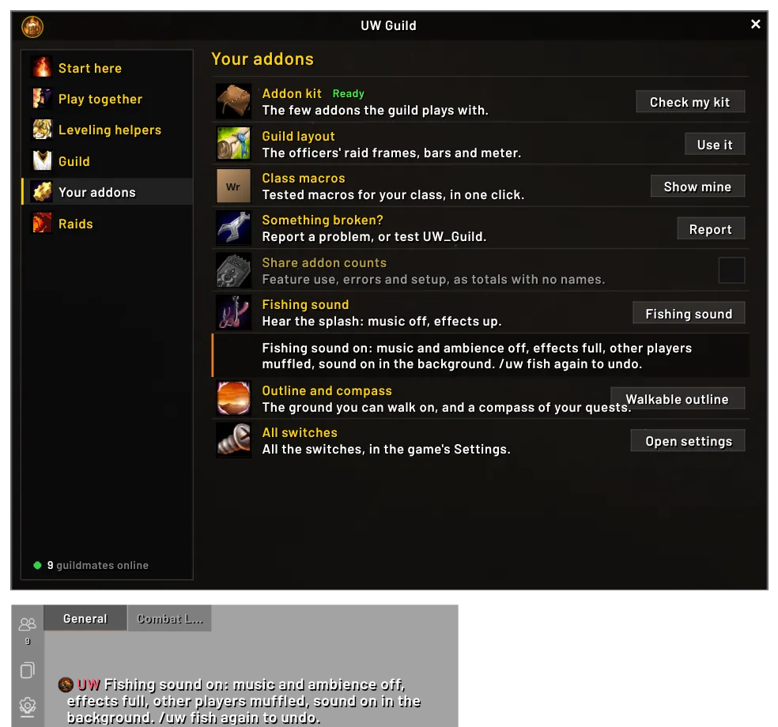
UW Guild · Your addons · Search · Addon kit · Ready · Start here · Check my kit · The few addons the guild plays with. · Play together · Guild layout · Use it · The officers' raid frames, bars and meter. · Leveling helpers · Class macros · Show mine · Guild · Tested macros for your class, in one click. · Something broken? · Report · Report a problem, or test UW_Guild. · Raids · Share addon counts · Feature use, errors and setup, as totals with no names. · Fishing sound · Sound · Hear the splash: music off, effects up. · Fishing sound on: music and ambience off, effects full, other players muffled, sound on in the background. /uw fish again to undo. · Outline and compass · Outline · Walkable ground and a quest compass. · All switches · Open settings · All the switches, in the game's Settings. · 9 guildmates online · UW Fishing sound on: music and ambience off, effects full, other players muffled, sound on in the background. /uw fish again to undo.
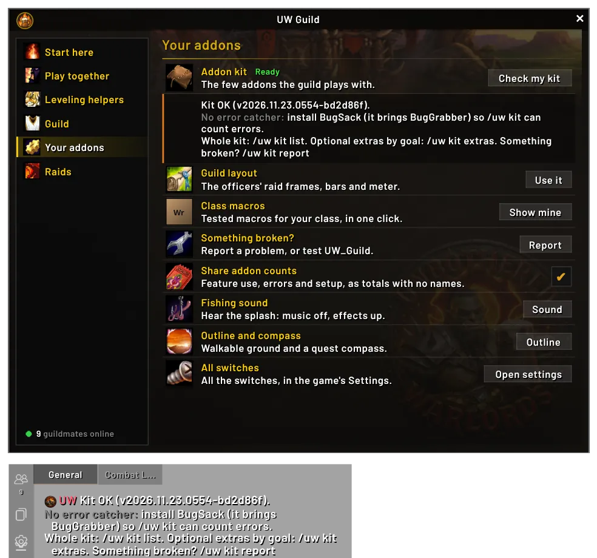
UW Guild · Your addons · Search · Addon kit · Ready · Start here · Check my kit · The few addons the guild plays with. · Play together · Kit OK (v2026.11.23.1416-8e8d43a). No error catcher: install BugSack (it brings BugGrabber) so /uw kit can count errors. Whole kit: /uw kit list. Optional extras by goal: /uw kit extras. Something broken? /uw kit report · Leveling helpers · Guild · Guild layout · Use it · The officers' raid frames, bars and meter. · Raids · Class macros · Show mine · Tested macros for your class, in one click. · Something broken? · Report · Report a problem, or test UW_Guild. · Share addon counts · Feature use, errors and setup, as totals with no names. · Fishing sound · Sound · Hear the splash: music off, effects up. · Outline and compass · Outline · Walkable ground and a quest compass. · All switches · Open settings · All the switches, in the game's Settings. · 9 guildmates online · UW Kit OK (v2026.11.23.1416-8e8d43a). · No error catcher: install BugSack (it brings BugGrabber) so /uw kit can count errors. · Whole kit: /uw kit list. Optional extras by goal: /uw kit extras. Something broken? /uw kit report
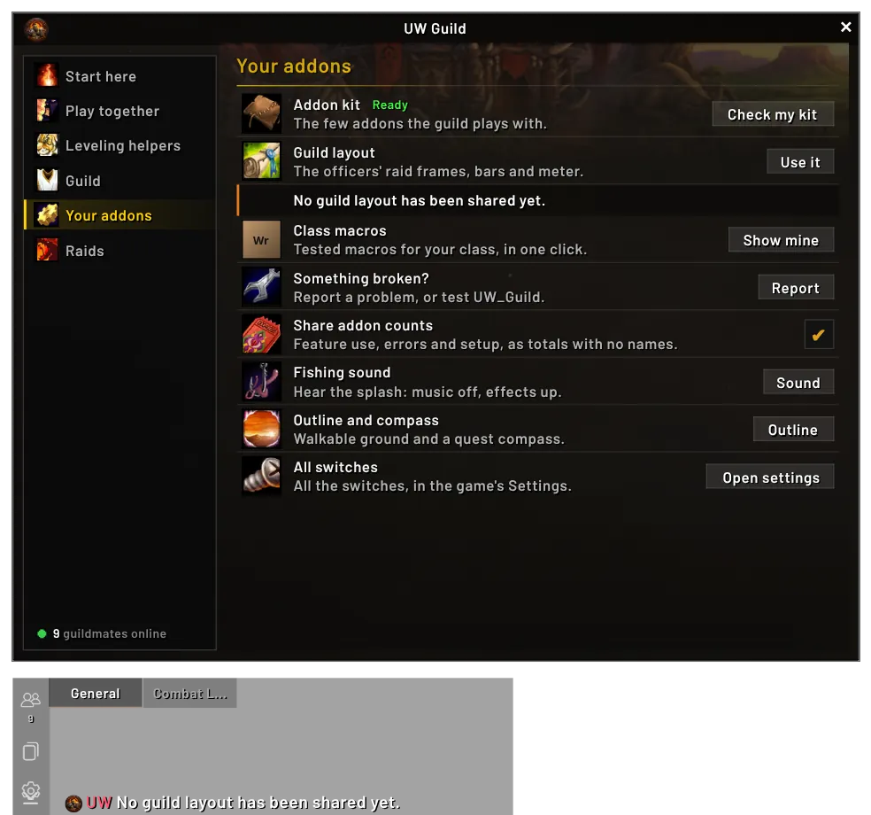
UW Guild · Your addons · Search · Addon kit · Ready · Start here · Check my kit · The few addons the guild plays with. · Play together · Guild layout · Use it · The officers' raid frames, bars and meter. · Leveling helpers · No guild layout has been shared yet. · Guild · Class macros · Show mine · Tested macros for your class, in one click. · Something broken? · Raids · Report · Report a problem, or test UW_Guild. · Share addon counts · Feature use, errors and setup, as totals with no names. · Fishing sound · Sound · Hear the splash: music off, effects up. · Outline and compass · Outline · Walkable ground and a quest compass. · All switches · Open settings · All the switches, in the game's Settings. · 9 guildmates online · UW No guild layout has been shared yet.
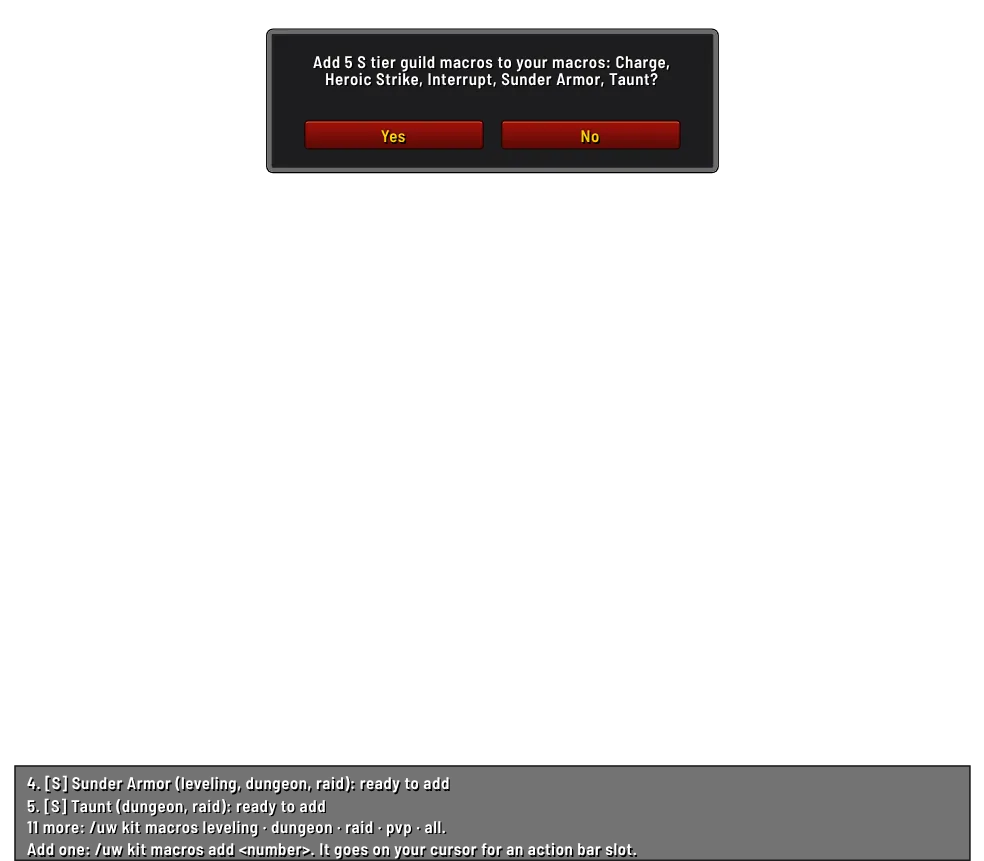
Add 5 S tier guild macros to your macros: Charge, Heroic Strike, Interrupt, Sunder Armor, Taunt? · Yes · No · UW Guild macros for your Warrior, S tier, best first (checked against Forever's client 1.60.1.70755): · 1. [S] Charge (leveling, dungeon, raid, pvp): ready to add · 2. [S] Heroic Strike (leveling, dungeon, raid): ready to add · 3. [S] Interrupt (dungeon, raid, pvp): ready to add · 4. [S] Sunder Armor (leveling, dungeon, raid): ready to add · 5. [S] Taunt (dungeon, raid): ready to add · 11 more: /uw kit macros leveling · dungeon · raid · pvp · professions · all. · Add one: /uw kit macros add <number>. It goes on your cursor for an action bar slot.
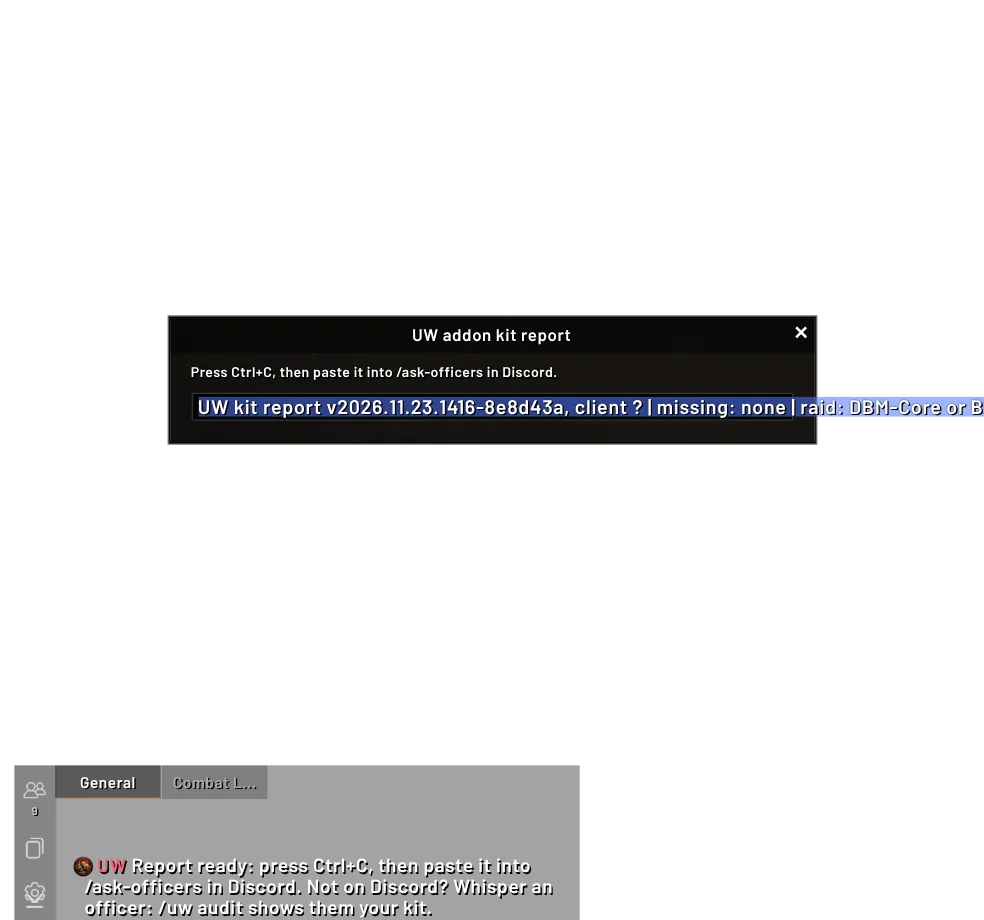
UW addon kit report · Press Ctrl+C, then paste it into /ask-officers in Discord. · UW kit report v2026.11.23.1416-8e8d43a, client ? | missing: none | raid: DBM-Core or BigWigs | duplicates: none | kept as theirs: none | errors: no BugGrabber | blocked: none | no Forever file: none | needs another addon: none | UW_Guild errors: none | client lacks: nothing · UW Report ready: press Ctrl+C, then paste it into /ask-officers in Discord. Not on Discord? Whisper an officer: /uw audit shows them your kit.
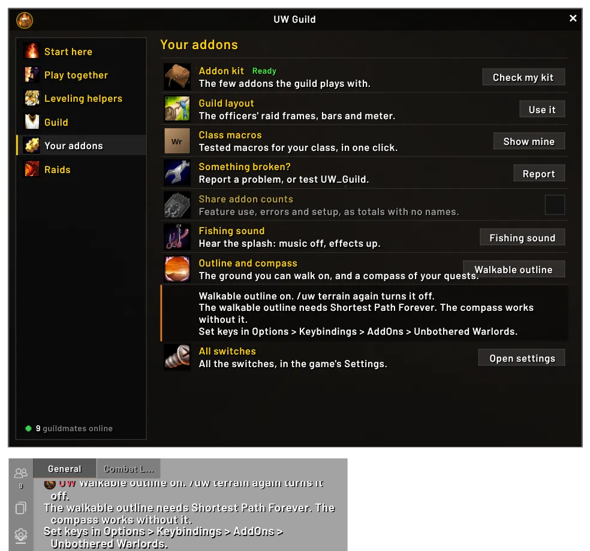
UW Guild · Your addons · Search · Addon kit · Ready · Start here · Check my kit · The few addons the guild plays with. · Play together · Guild layout · Use it · The officers' raid frames, bars and meter. · Leveling helpers · Class macros · Show mine · Guild · Tested macros for your class, in one click. · Something broken? · Report · Report a problem, or test UW_Guild. · Raids · Share addon counts · Feature use, errors and setup, as totals with no names. · Fishing sound · Sound · Hear the splash: music off, effects up. · Outline and compass · Outline · Walkable ground and a quest compass. · Walkable outline on. /uw terrain again turns it off. The walkable outline needs Shortest Path Forever. The compass works without it. Set keys in Options > Keybindings > AddOns > Unbothered Warlords. · All switches · Open settings · All the switches, in the game's Settings. · 9 guildmates online · UW Walkable outline on. /uw terrain again turns it off. · The walkable outline needs Shortest Path Forever. The compass works without it. · Set keys in Options > Keybindings > AddOns > Unbothered Warlords.
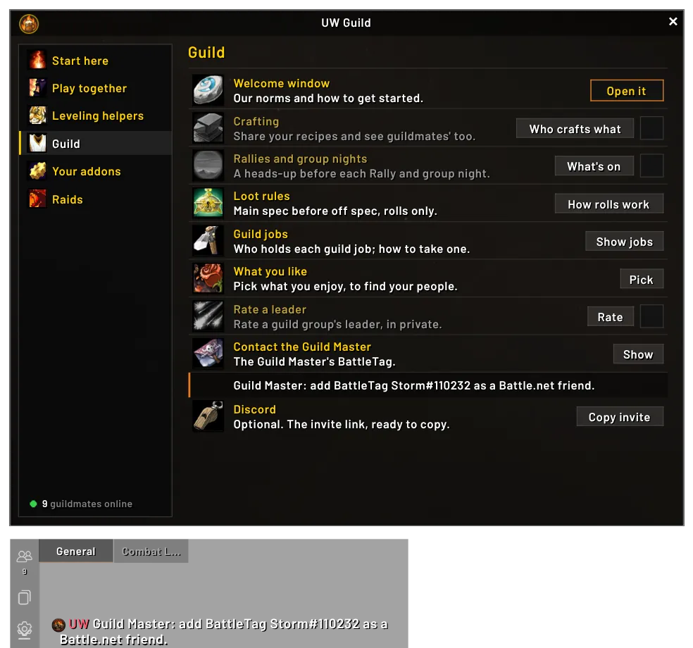
UW Guild · Guild · Search · Welcome window · Start here · Open it · Our norms and how to get started. · Play together · Crafting · Who crafts what · Share your recipes and see guildmates' too. · Leveling helpers · Rallies and group nights · What's on · A heads-up before each Rally and group night. · Loot rules · Your addons · How rolls work · Main spec before off spec, rolls only. · Raids · Guild jobs · Show jobs · Who holds each guild job; how to take one. · What you like · Pick · Pick what you enjoy, to find your people. · Rate a leader · Rate · Rate a guild group's leader, in private. · Contact the Guild Master · Show · The Guild Master's BattleTag. · Guild Master: add BattleTag Storm#110232 as a Battle.net friend. · Discord · Copy invite · Groups, events, raid nights. The invite, ready to copy. · 9 guildmates online · UW Guild Master: add BattleTag Storm#110232 as a Battle.net friend.
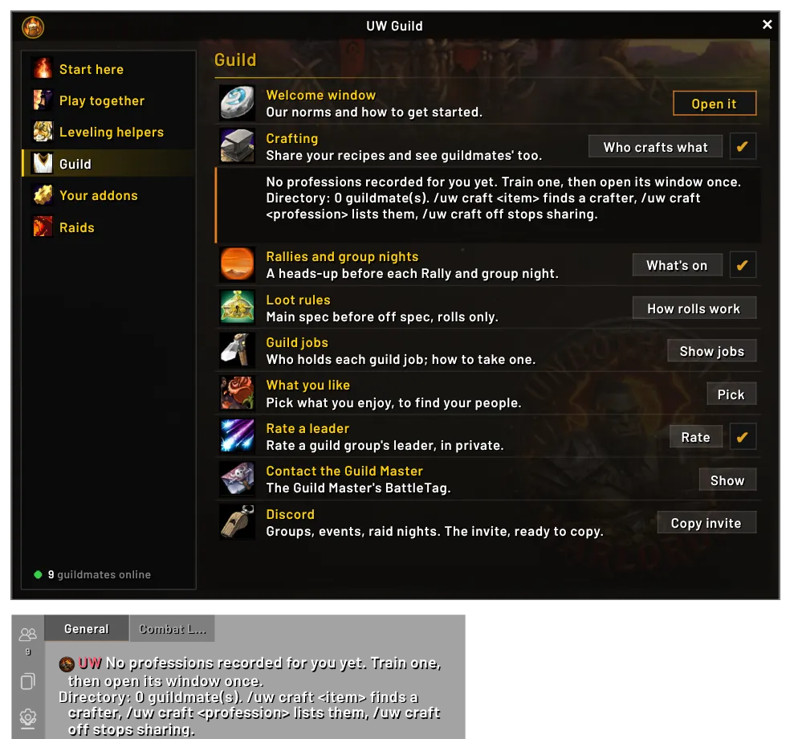
UW Guild · Guild · Search · Welcome window · Start here · Open it · Our norms and how to get started. · Play together · Crafting · Who crafts what · Share your recipes and see guildmates' too. · Leveling helpers · No professions recorded for you yet. Train one, then open its window once. Directory: 0 guildmate(s). /uw craft <item> finds a crafter, /uw craft <profession> lists them, /uw craft off stops sharing. · Your addons · Rallies and group nights · Raids · What's on · A heads-up before each Rally and group night. · Loot rules · How rolls work · Main spec before off spec, rolls only. · Guild jobs · Show jobs · Who holds each guild job; how to take one. · What you like · Pick · Pick what you enjoy, to find your people. · Rate a leader · Rate · Rate a guild group's leader, in private. · Contact the Guild Master · Show · The Guild Master's BattleTag. · Discord · Copy invite · Groups, events, raid nights. The invite, ready to copy. · 9 guildmates online · UW No professions recorded for you yet. Train one, then open its window once. · Directory: 0 guildmate(s). /uw craft <item> finds a crafter, /uw craft <profession> lists them, /uw craft off stops sharing.
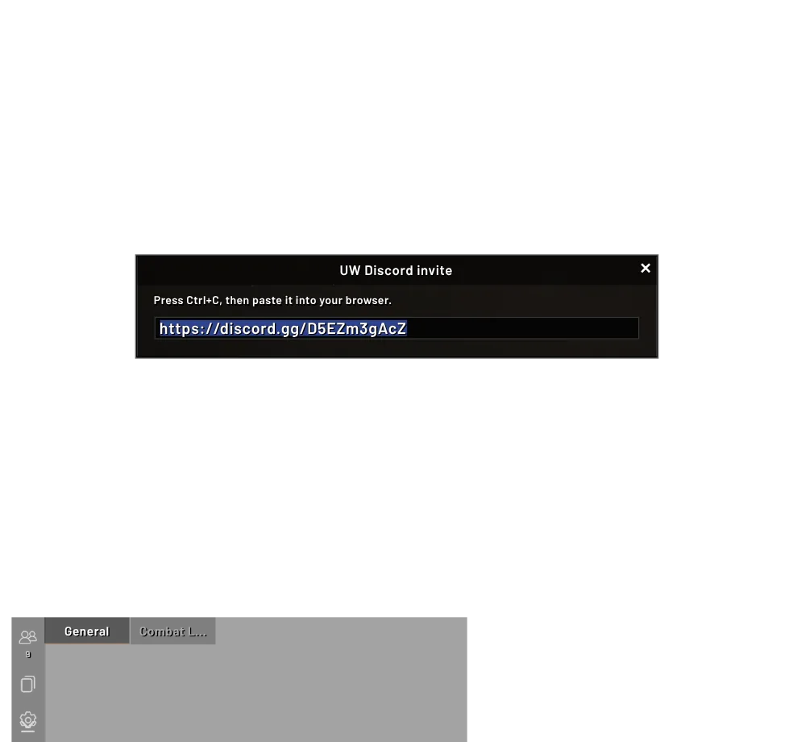
UW Discord invite · Press Ctrl+C, then paste it into your browser. · https://discord.gg/D5EZm3gAcZ
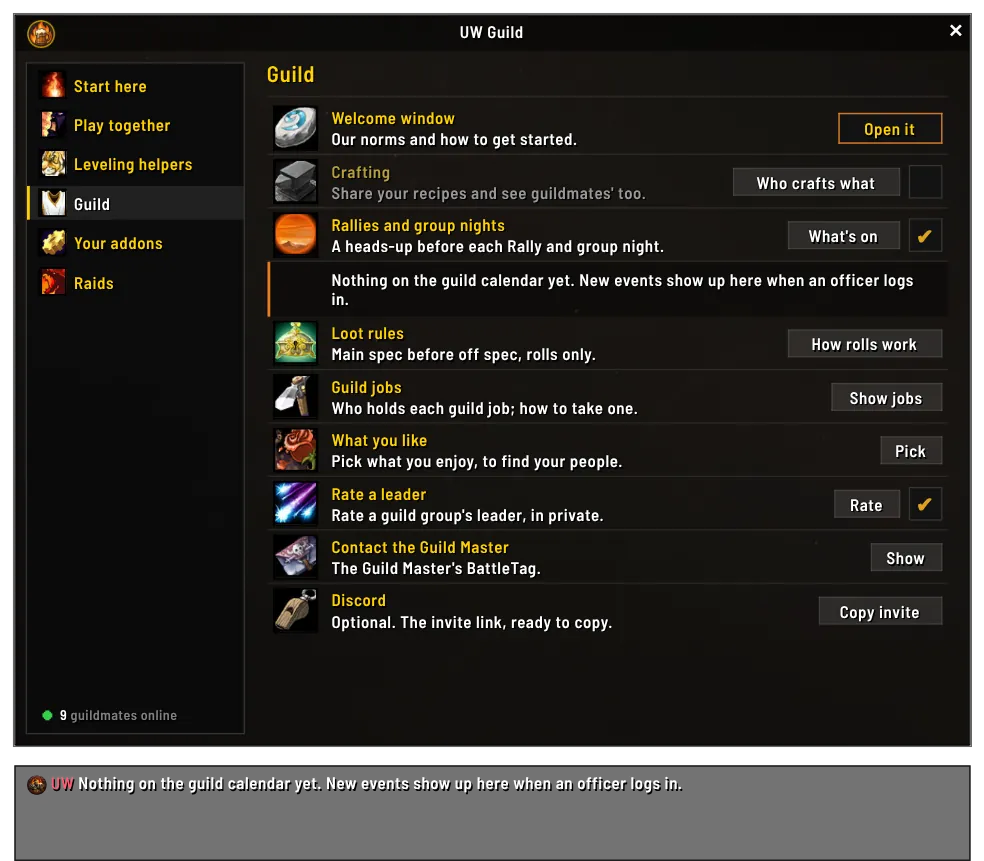
UW Guild · Guild · Search · Welcome window · Start here · Open it · Our norms and how to get started. · Play together · Crafting · Who crafts what · Share your recipes and see guildmates' too. · Leveling helpers · Rallies and group nights · What's on · A heads-up before each Rally and group night. · Nothing on the guild calendar yet. New events show up here when an officer logs in. · Your addons · Raids · Loot rules · How rolls work · Main spec before off spec, rolls only. · Guild jobs · Show jobs · Who holds each guild job; how to take one. · What you like · Pick · Pick what you enjoy, to find your people. · Rate a leader · Rate · Rate a guild group's leader, in private. · Contact the Guild Master · Show · The Guild Master's BattleTag. · Discord · Copy invite · Groups, events, raid nights. The invite, ready to copy. · 9 guildmates online · UW Nothing on the guild calendar yet. New events show up here when an officer logs in.
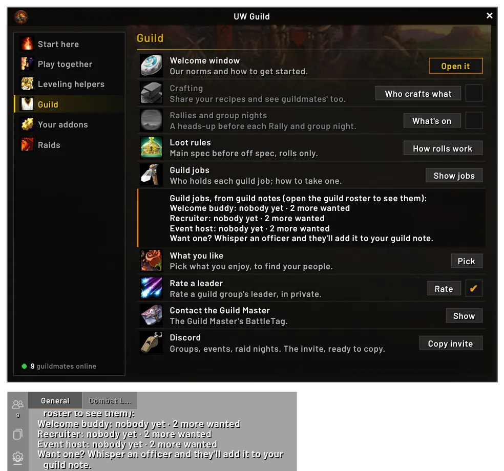
UW Guild · Guild · Search · Welcome window · Start here · Open it · Our norms and how to get started. · Play together · Crafting · Who crafts what · Share your recipes and see guildmates' too. · Leveling helpers · Rallies and group nights · What's on · A heads-up before each Rally and group night. · Loot rules · Your addons · How rolls work · Main spec before off spec, rolls only. · Raids · Guild jobs · Show jobs · Who holds each guild job; how to take one. · Guild jobs, from guild notes (open the guild roster to see them): Welcome buddy: nobody yet · 2 more wanted Recruiter: nobody yet · 2 more wanted Event host: nobody yet · 2 more wanted Want one? Whisper an officer and they'll add it to your guild note. · What you like · Pick · Pick what you enjoy, to find your people. · Rate a leader · Rate · Rate a guild group's leader, in private. · Contact the Guild Master · Show · The Guild Master's BattleTag. · Discord · Copy invite · Groups, events, raid nights. The invite, ready to copy. · 9 guildmates online · UW Guild jobs, from guild notes (open the guild roster to see them): · Welcome buddy: nobody yet · 2 more wanted · Recruiter: nobody yet · 2 more wanted · Event host: nobody yet · 2 more wanted · Want one? Whisper an officer and they'll add it to your guild note.
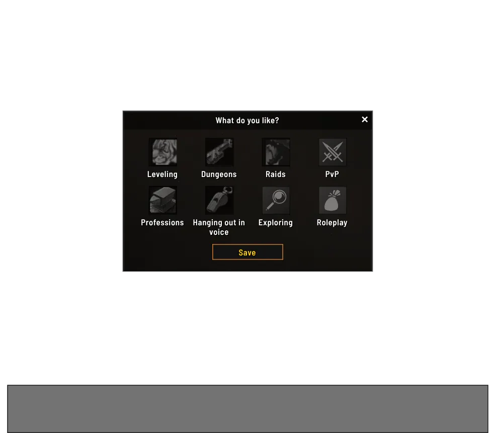
What do you like? · Leveling · Dungeons · Raids · PvP · Professions · Hanging out in voice · Exploring · Roleplay · Save
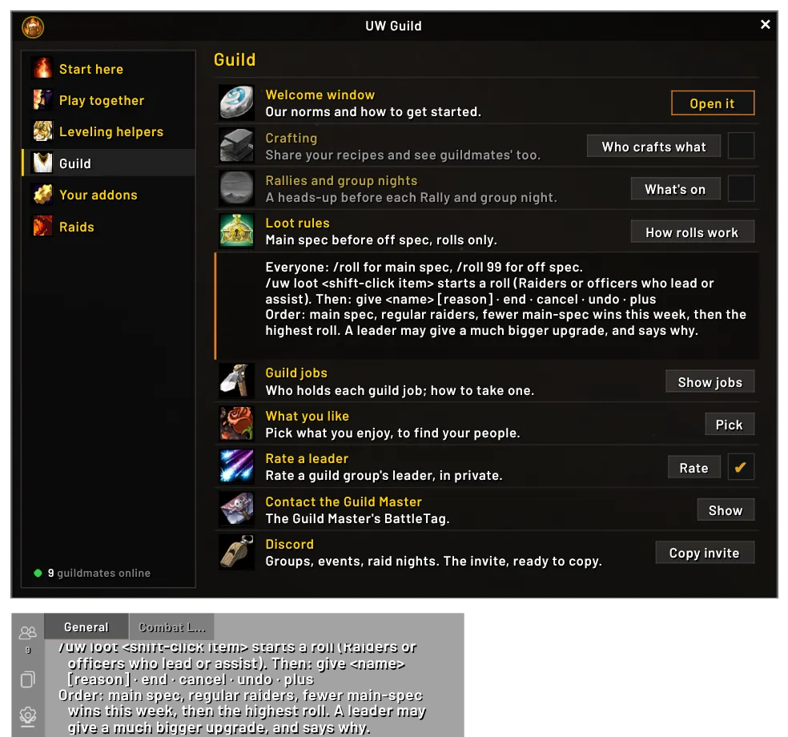
UW Guild · Guild · Search · Welcome window · Start here · Open it · Our norms and how to get started. · Play together · Crafting · Who crafts what · Share your recipes and see guildmates' too. · Leveling helpers · Rallies and group nights · What's on · A heads-up before each Rally and group night. · Loot rules · Your addons · How rolls work · Main spec before off spec, rolls only. · Raids · Everyone: /roll for main spec, /roll 99 for off spec. /uw loot <shift-click item> starts a roll (Raiders or officers who lead or assist). Then: give <name> [reason] · end · cancel · undo · plus Order: main spec, regular raiders, fewer main-spec wins this week, then the highest roll. A leader may give a much bigger upgrade, and says why. · Guild jobs · Show jobs · Who holds each guild job; how to take one. · What you like · Pick · Pick what you enjoy, to find your people. · Rate a leader · Rate · Rate a guild group's leader, in private. · Contact the Guild Master · Show · The Guild Master's BattleTag. · Discord · Copy invite · Groups, events, raid nights. The invite, ready to copy. · 9 guildmates online · UW Everyone: /roll for main spec, /roll 99 for off spec. · /uw loot <shift-click item> starts a roll (Raiders or officers who lead or assist). Then: give <name> [reason] · end · cancel · undo · plus · Order: main spec, regular raiders, fewer main-spec wins this week, then the highest roll. A leader may give a much bigger upgrade, and says why.
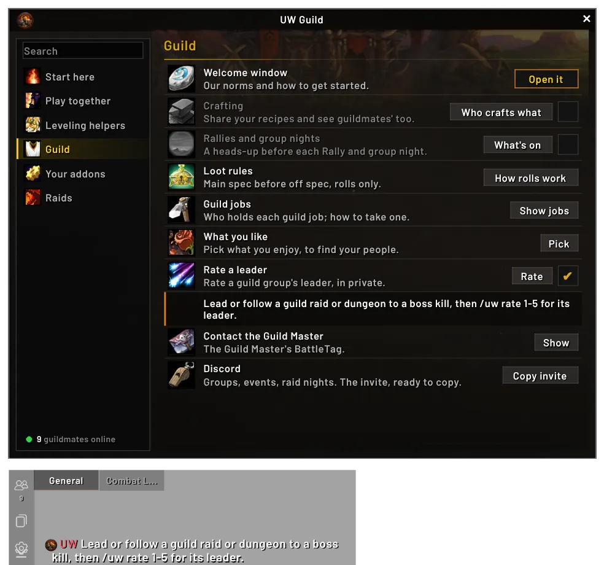
UW Guild · Guild · Search · Welcome window · Start here · Open it · Our norms and how to get started. · Play together · Crafting · Who crafts what · Share your recipes and see guildmates' too. · Leveling helpers · Rallies and group nights · What's on · A heads-up before each Rally and group night. · Loot rules · Your addons · How rolls work · Main spec before off spec, rolls only. · Raids · Guild jobs · Show jobs · Who holds each guild job; how to take one. · What you like · Pick · Pick what you enjoy, to find your people. · Rate a leader · Rate · Rate a guild group's leader, in private. · Lead or follow a guild raid or dungeon to a boss kill, then /uw rate 1-5 for its leader. · Contact the Guild Master · Show · The Guild Master's BattleTag. · Discord · Copy invite · Groups, events, raid nights. The invite, ready to copy. · 9 guildmates online · UW Lead or follow a guild raid or dungeon to a boss kill, then /uw rate 1-5 for its leader.
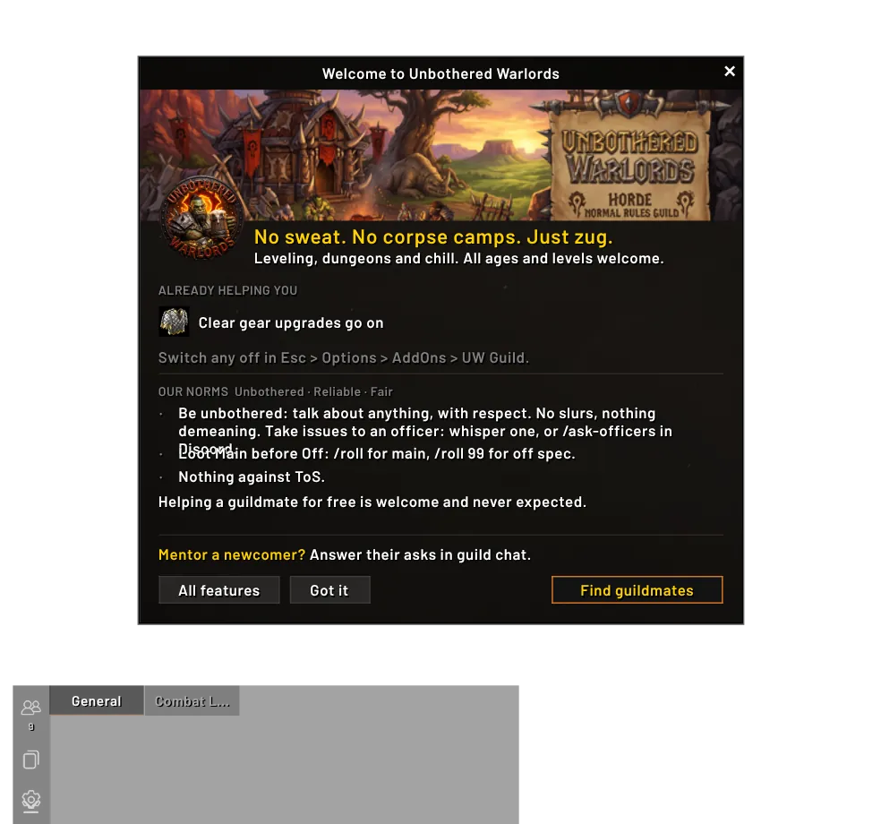
Welcome to Unbothered Warlords · No sweat. No corpse camps. Just zug. · Leveling, dungeons and chill. All ages and levels welcome. · ALREADY HELPING YOU · Clear gear upgrades go on · Switch any off in Esc > Options > AddOns > UW Guild. · OUR NORMS Unbothered · Reliable · Fair · · · Be unbothered: talk about anything, with respect. No slurs, nothing demeaning. Take issues to an officer: whisper one, or /ask-officers in Discord. · Loot Main before Off: /roll for main, /roll 99 for off spec. · Nothing against ToS. · Helping a guildmate for free is welcome and never expected. · Mentor a newcomer? Answer their asks in guild chat. · All features · Got it · Find guildmates
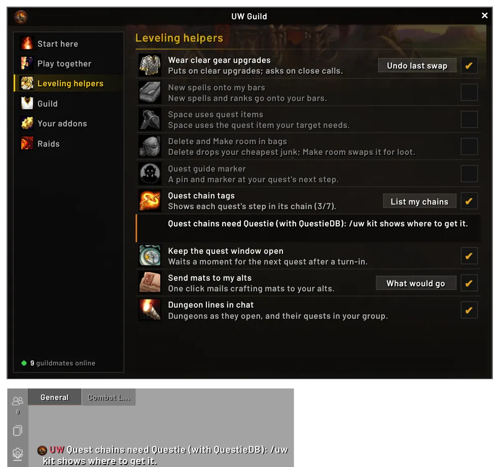
UW Guild · Leveling helpers · Search · Wear clear gear upgrades · Start here · Undo last swap · Puts on clear upgrades; asks on close calls. · Play together · New spells onto my bars · New spells and ranks go onto your bars. · Space uses quest items · Guild · Space uses the quest item your target needs. · Delete and Make room in bags · Your addons · Delete drops your cheapest junk; Make room swaps it for loot. · Raids · Quest guide marker · A pin and marker at your quest's next step. · Quest chain tags · List my chains · Shows each quest's step in its chain (3/7). · Quest chains need Questie (with QuestieDB): /uw kit shows where to get it. · Keep the quest window open · Waits a moment for the next quest after a turn-in. · Send mats to my alts · What would go · One click mails crafting mats to your alts. · Dungeon lines in chat · Dungeons as they open, and their quests in your group. · 9 guildmates online · UW Quest chains need Questie (with QuestieDB): /uw kit shows where to get it.
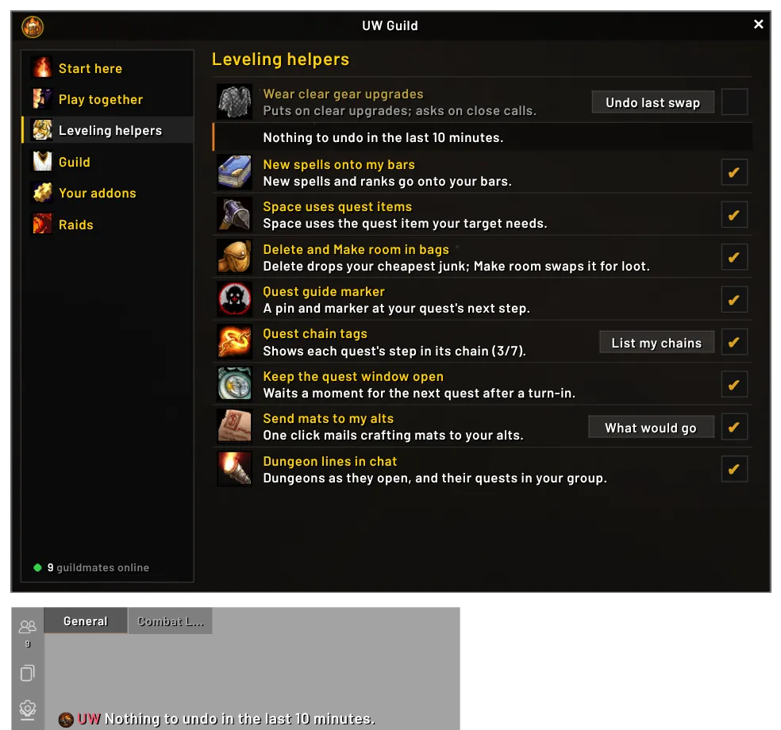
UW Guild · Leveling helpers · Search · Wear clear gear upgrades · Start here · Undo last swap · Puts on clear upgrades; asks on close calls. · Play together · Nothing to undo in the last 10 minutes. · New spells onto my bars · New spells and ranks go onto your bars. · Guild · Space uses quest items · Your addons · Space uses the quest item your target needs. · Delete and Make room in bags · Raids · Delete drops your cheapest junk; Make room swaps it for loot. · Quest guide marker · A pin and marker at your quest's next step. · Quest chain tags · List my chains · Shows each quest's step in its chain (3/7). · Keep the quest window open · Waits a moment for the next quest after a turn-in. · Send mats to my alts · What would go · One click mails crafting mats to your alts. · Dungeon lines in chat · Dungeons as they open, and their quests in your group. · 9 guildmates online · UW Nothing to undo in the last 10 minutes.
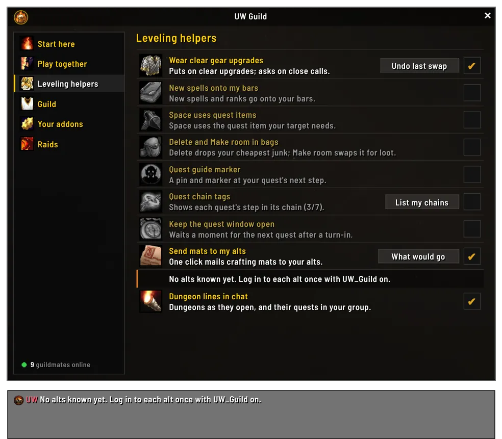
UW Guild · Leveling helpers · Search · Wear clear gear upgrades · Start here · Undo last swap · Puts on clear upgrades; asks on close calls. · Play together · New spells onto my bars · New spells and ranks go onto your bars. · Space uses quest items · Guild · Space uses the quest item your target needs. · Delete and Make room in bags · Your addons · Delete drops your cheapest junk; Make room swaps it for loot. · Raids · Quest guide marker · A pin and marker at your quest's next step. · Quest chain tags · List my chains · Shows each quest's step in its chain (3/7). · Keep the quest window open · Waits a moment for the next quest after a turn-in. · Send mats to my alts · What would go · One click mails crafting mats to your alts. · No alts known yet. Log in to each alt once with UW_Guild on. · Dungeon lines in chat · Dungeons as they open, and their quests in your group. · 9 guildmates online · UW No alts known yet. Log in to each alt once with UW_Guild on.
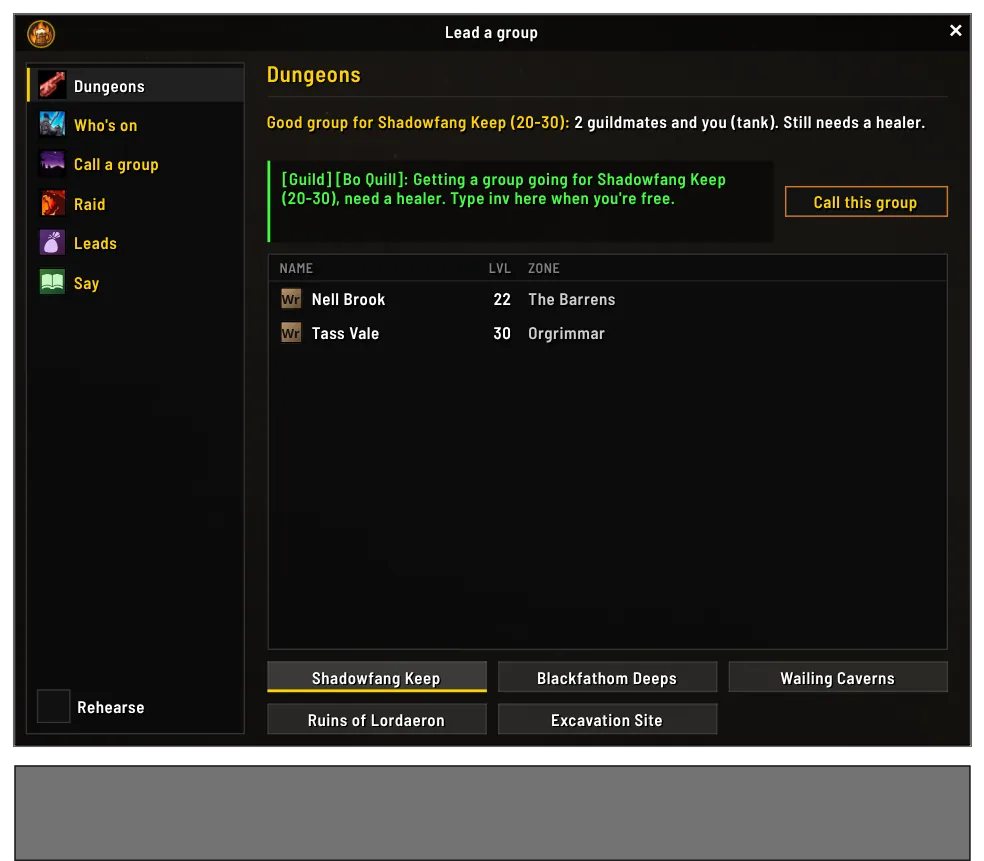
Lead a group · Dungeons · Good group for Shadowfang Keep (20-30): 2 guildmates and you (tank). Still needs a healer. · Who's on · Call a group · [Guild] [Bo Quill]: Getting a group going for Shadowfang Keep (20-30), need a healer. Type inv here when you're free. · Call this group · Raid · Leads · NAME · LVL · ZONE · Say · Nell Brook · 22 · The Barrens · Tass Vale · 30 · Orgrimmar · Shadowfang Keep · Blackfathom Deeps · Wailing Caverns · Rehearse · Ruins of Lordaeron · Excavation Site
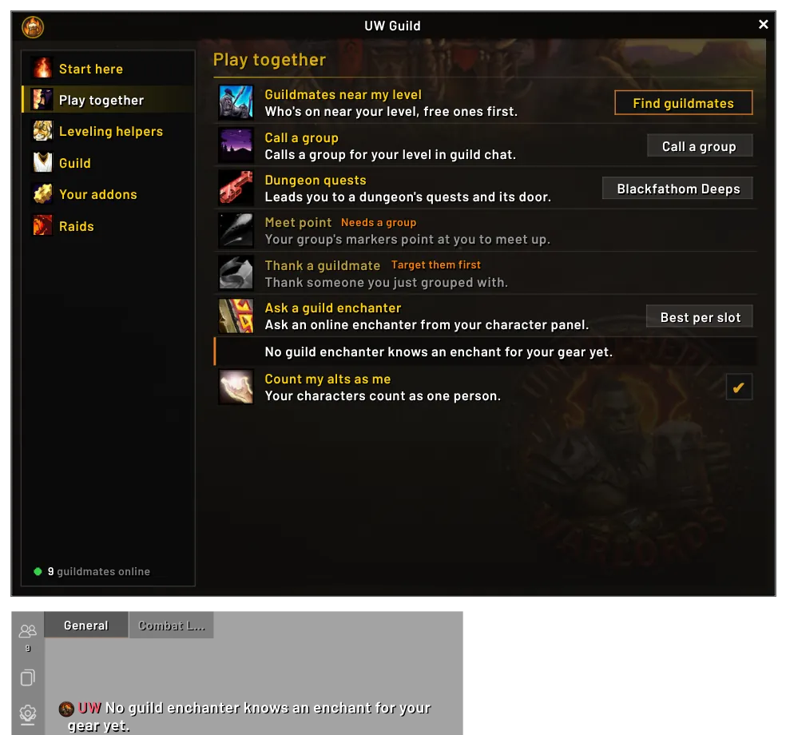
UW Guild · Play together · Search · Guildmates near my level · Start here · Find guildmates · Who's on near your level, free ones first. · Call a group · Calls a group for your level in guild chat. · Leveling helpers · Dungeon quests · Blackfathom Deeps · Guild · Leads you to a dungeon's quests and its door. · Meet point · Your addons · Needs a group · Your group's markers point at you to meet up. · Raids · Thank a guildmate · Target them first · Thank someone you just grouped with. · Ask a guild enchanter · Best per slot · Ask an online enchanter from your character panel. · No guild enchanter knows an enchant for your gear yet. · Count my alts as me · Your characters count as one person. · 9 guildmates online · UW No guild enchanter knows an enchant for your gear yet.
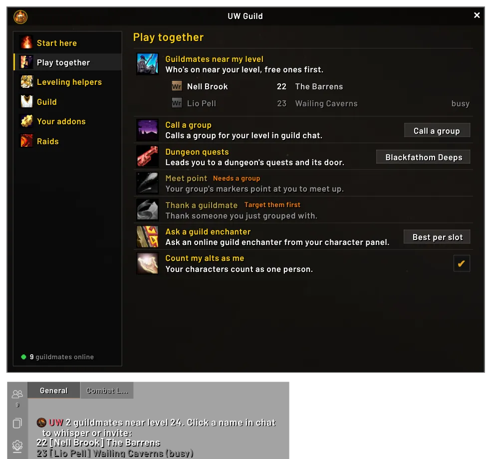
UW Guild · Play together · Search · Guildmates near my level · Start here · Who's on near your level, free ones first. · Nell Brook · 22 · The Barrens · Leveling helpers · Lio Pell · 23 · Wailing Caverns · busy · Guild · Call a group · Calls a group for your level in guild chat. · Your addons · Dungeon quests · Blackfathom Deeps · Raids · Leads you to a dungeon's quests and its door. · Meet point · Needs a group · Your group's markers point at you to meet up. · Thank a guildmate · Target them first · Thank someone you just grouped with. · Ask a guild enchanter · Best per slot · Ask an online enchanter from your character panel. · Count my alts as me · Your characters count as one person. · 9 guildmates online · UW 2 guildmates near level 24. Click a name in chat to whisper or invite: · 22 [Nell Brook] The Barrens · 23 [Lio Pell] Wailing Caverns (busy)
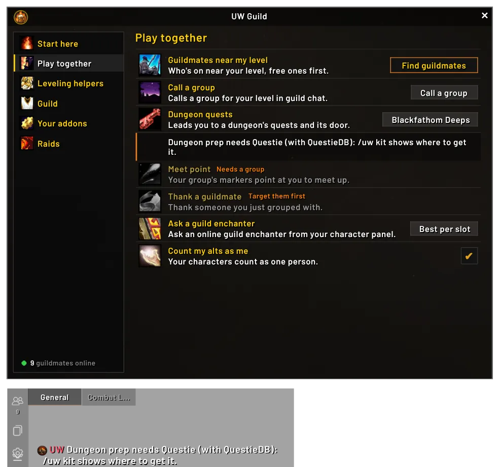
UW Guild · Play together · Search · Guildmates near my level · Start here · Find guildmates · Who's on near your level, free ones first. · Call a group · Calls a group for your level in guild chat. · Leveling helpers · Dungeon quests · Blackfathom Deeps · Guild · Leads you to a dungeon's quests and its door. · Dungeon prep needs Questie (with QuestieDB): /uw kit shows where to get it. · Your addons · Raids · Meet point · Needs a group · Your group's markers point at you to meet up. · Thank a guildmate · Target them first · Thank someone you just grouped with. · Ask a guild enchanter · Best per slot · Ask an online enchanter from your character panel. · Count my alts as me · Your characters count as one person. · 9 guildmates online · UW Dungeon prep needs Questie (with QuestieDB): /uw kit shows where to get it.
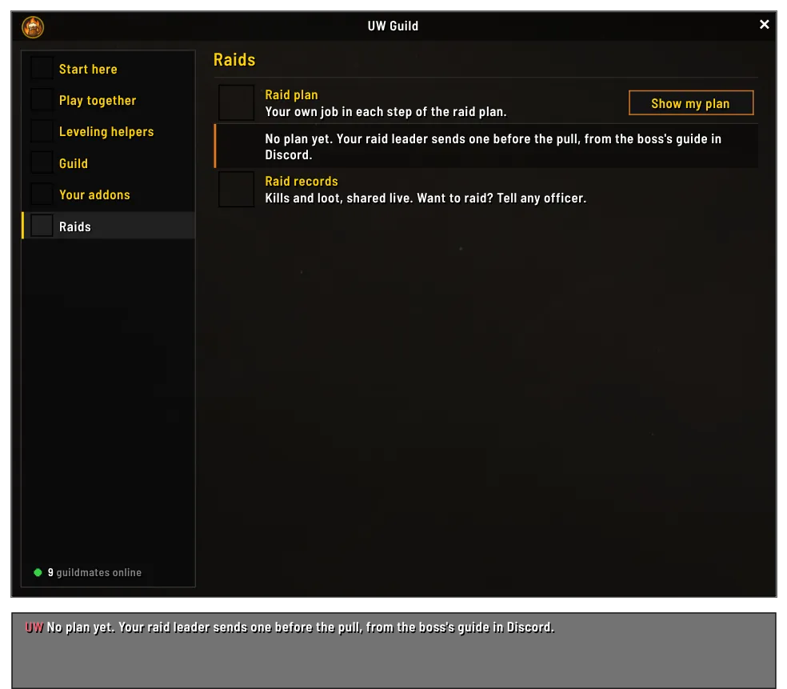
UW Guild · Raids · Search · Raid plan · Start here · Show my plan · Your own job in each step of the raid plan. · Play together · No plan yet. Your raid leader sends one before the pull, from the boss's guide in Discord. · Leveling helpers · Raid records · Guild · Kills and loot, shared live. Want to raid? Tell any officer. · Your addons · 9 guildmates online · UW No plan yet. Your raid leader sends one before the pull, from the boss's guide in Discord.

Lead a group · Dungeons · Good group for Shadowfang Keep (20-30): 2 guildmates and you (tank). Still needs a healer. · Who's on · Call a group · [Guild] [Bo Quill]: Getting a group going for Shadowfang Keep (20-30), need a healer. Type inv here when you're free. · Call this group · Raid · Leads · NAME · LVL · ZONE · Say · Nell Brook · 22 · The Barrens · Tass Vale · 30 · Orgrimmar · Shadowfang Keep · Blackfathom Deeps · Wailing Caverns · Rehearse · Ruins of Lordaeron · Excavation Site
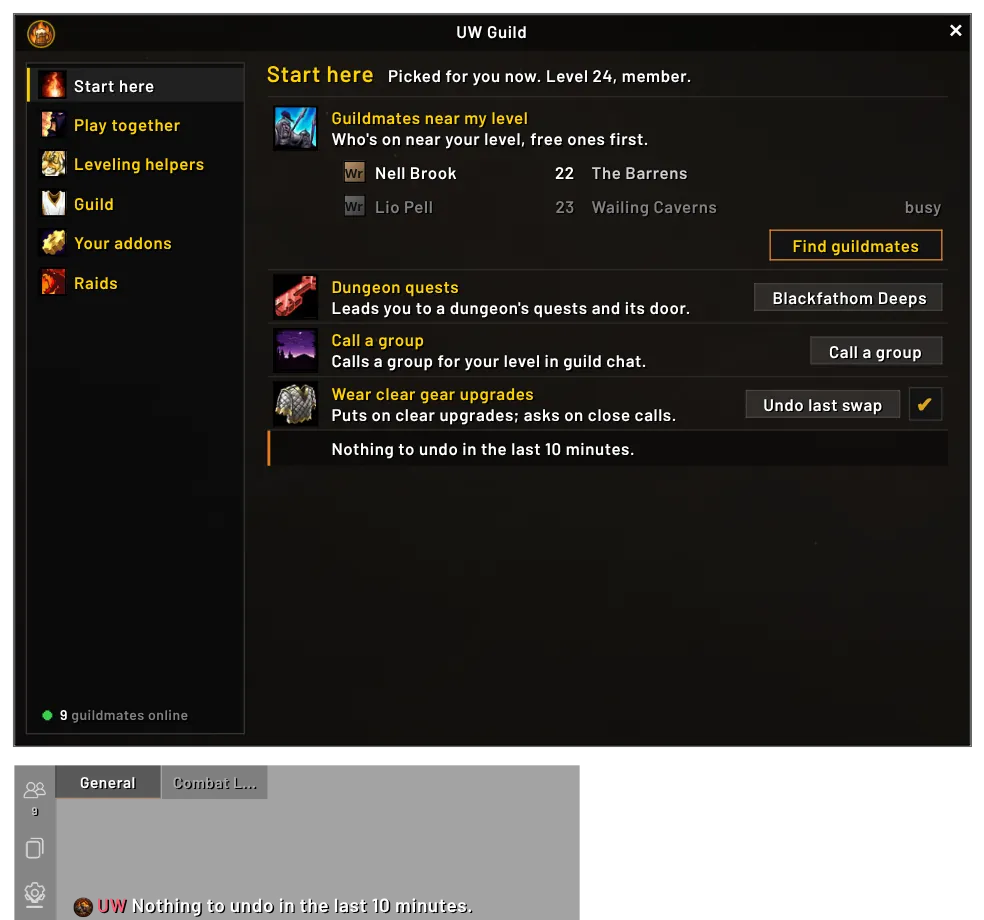
UW Guild · Start here · Picked for you now. Level 24, member. · Search · Guildmates near my level · Who's on near your level, free ones first. · Play together · Nell Brook · 22 · The Barrens · Leveling helpers · Lio Pell · 23 · Wailing Caverns · busy · Guild · Find guildmates · Your addons · Dungeon quests · Blackfathom Deeps · Leads you to a dungeon's quests and its door. · Raids · Call a group · Calls a group for your level in guild chat. · Wear clear gear upgrades · Undo last swap · Puts on clear upgrades; asks on close calls. · Nothing to undo in the last 10 minutes. · 9 guildmates online · UW Nothing to undo in the last 10 minutes.
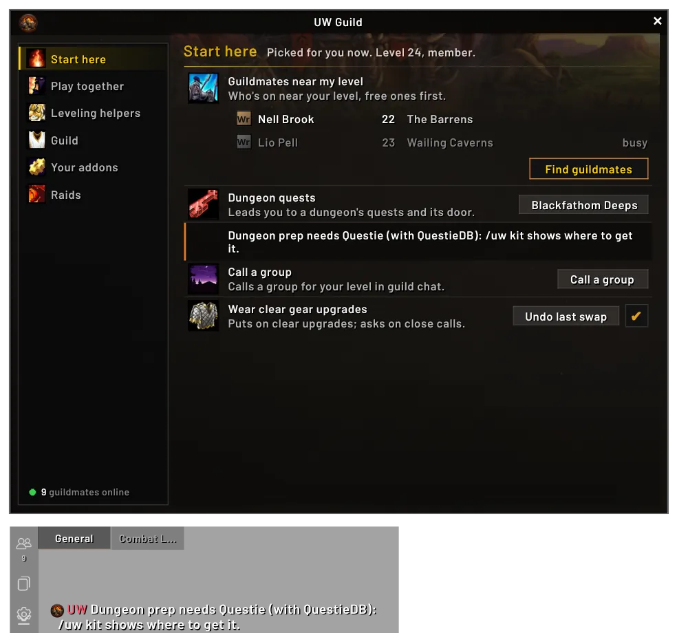
UW Guild · Start here · Picked for you now. Level 24, member. · Search · Guildmates near my level · Who's on near your level, free ones first. · Play together · Nell Brook · 22 · The Barrens · Leveling helpers · Lio Pell · 23 · Wailing Caverns · busy · Guild · Find guildmates · Your addons · Dungeon quests · Blackfathom Deeps · Leads you to a dungeon's quests and its door. · Raids · Dungeon prep needs Questie (with QuestieDB): /uw kit shows where to get it. · Call a group · Calls a group for your level in guild chat. · Wear clear gear upgrades · Undo last swap · Puts on clear upgrades; asks on close calls. · 9 guildmates online · UW Dungeon prep needs Questie (with QuestieDB): /uw kit shows where to get it.
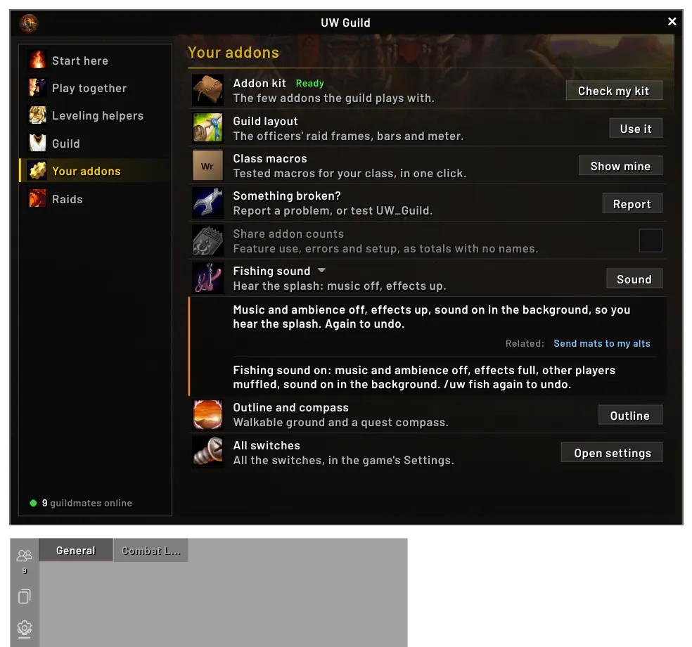
UW Guild · Your addons · Search · Addon kit · Ready · Start here · Check my kit · The few addons the guild plays with. · Play together · Guild layout · Use it · The officers' raid frames, bars and meter. · Leveling helpers · Class macros · Show mine · Guild · Tested macros for your class, in one click. · Something broken? · Report · Report a problem, or test UW_Guild. · Raids · Share addon counts · Feature use, errors and setup, as totals with no names. · Fishing sound · Sound · Hear the splash: music off, effects up. · Music and ambience off, effects up, sound on in the background, so you hear the splash. Again to undo. · Related: · Send mats to my alts · Fishing sound on: music and ambience off, effects full, other players muffled, sound on in the background. /uw fish again to undo. · Outline and compass · Outline · Walkable ground and a quest compass. · All switches · Open settings · All the switches, in the game's Settings. · 9 guildmates online
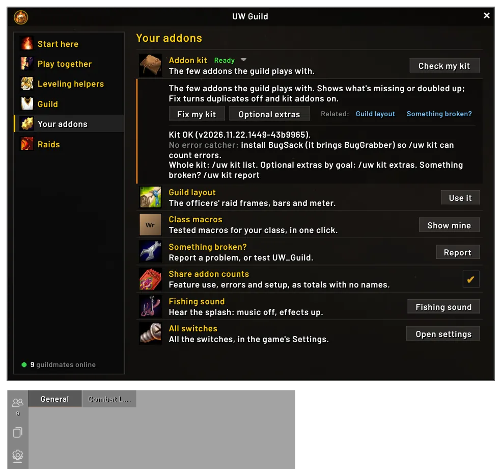
UW Guild · Your addons · Search · Addon kit · Ready · Start here · Check my kit · The few addons the guild plays with. · Play together · The few addons the guild plays with. Shows what's missing or doubled up; Fix turns duplicates off and kit addons on. · Leveling helpers · Fix my kit · Optional extras · Related: · Guild layout · Something broken? · Guild · Kit OK (v2026.11.23.1416-8e8d43a). No error catcher: install BugSack (it brings BugGrabber) so /uw kit can count errors. 1 more in chat · Raids · Use it · The officers' raid frames, bars and meter. · Class macros · Show mine · Tested macros for your class, in one click. · Report · Report a problem, or test UW_Guild. · Share addon counts · Feature use, errors and setup, as totals with no names. · Fishing sound · Sound · Hear the splash: music off, effects up. · Outline and compass · Outline · Walkable ground and a quest compass. · All switches · Open settings · All the switches, in the game's Settings. · 9 guildmates online
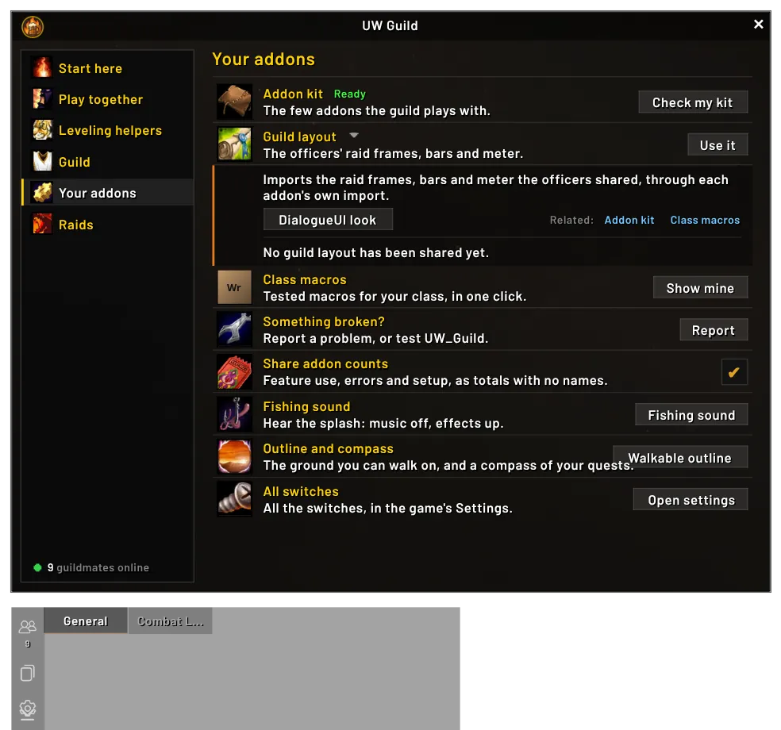
UW Guild · Your addons · Search · Addon kit · Ready · Start here · Check my kit · The few addons the guild plays with. · Play together · Guild layout · Use it · The officers' raid frames, bars and meter. · Leveling helpers · Imports the raid frames, bars and meter the officers shared, through each addon's own import. · Guild · DialogueUI look · Related: · Class macros · No guild layout has been shared yet. · Raids · Show mine · Tested macros for your class, in one click. · Something broken? · Report · Report a problem, or test UW_Guild. · Share addon counts · Feature use, errors and setup, as totals with no names. · Fishing sound · Sound · Hear the splash: music off, effects up. · Outline and compass · Outline · Walkable ground and a quest compass. · All switches · Open settings · All the switches, in the game's Settings. · 9 guildmates online
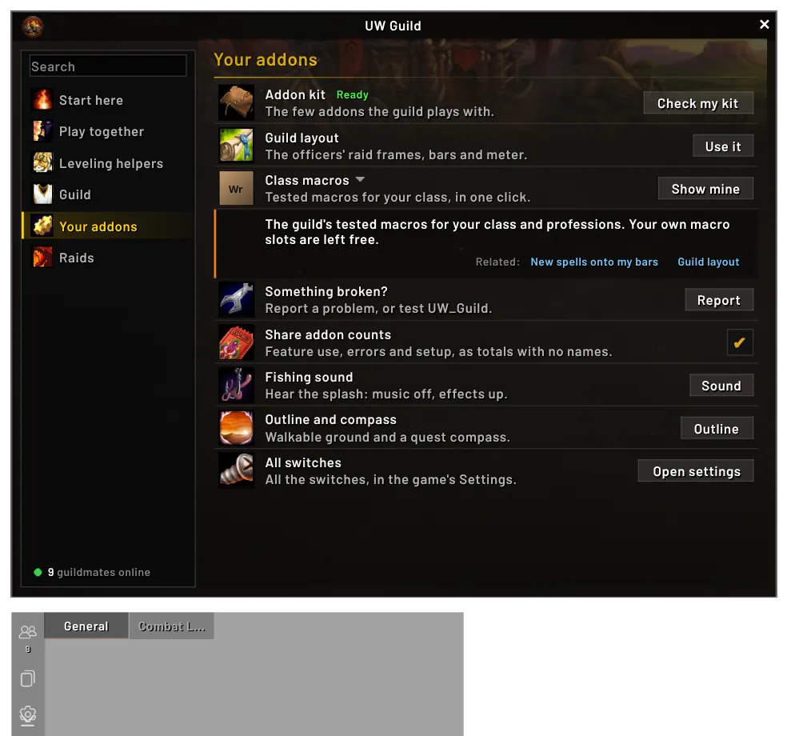
UW Guild · Your addons · Search · Addon kit · Ready · Start here · Check my kit · The few addons the guild plays with. · Play together · Guild layout · Use it · The officers' raid frames, bars and meter. · Leveling helpers · Class macros · Show mine · Guild · Tested macros for your class, in one click. · The guild's tested macros for your class and professions. Your own macro slots are left free. · Raids · Related: · New spells onto my bars · Something broken? · Report · Report a problem, or test UW_Guild. · Share addon counts · Feature use, errors and setup, as totals with no names. · Fishing sound · Sound · Hear the splash: music off, effects up. · Outline and compass · Outline · Walkable ground and a quest compass. · All switches · Open settings · All the switches, in the game's Settings. · 9 guildmates online
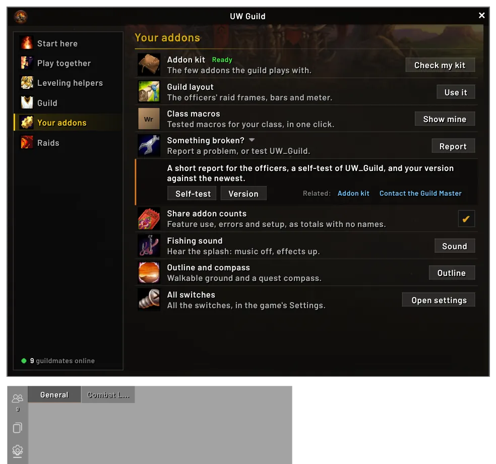
UW Guild · Your addons · Search · Addon kit · Ready · Start here · Check my kit · The few addons the guild plays with. · Play together · Guild layout · Use it · The officers' raid frames, bars and meter. · Leveling helpers · Class macros · Show mine · Guild · Tested macros for your class, in one click. · Something broken? · Report · Report a problem, or test UW_Guild. · Raids · A short report for the officers, a self-test of UW_Guild, and your version against the newest. · Self-test · Version · Related: · Contact the Guild Master · Share addon counts · Feature use, errors and setup, as totals with no names. · Fishing sound · Sound · Hear the splash: music off, effects up. · Outline and compass · Outline · Walkable ground and a quest compass. · All switches · Open settings · All the switches, in the game's Settings. · 9 guildmates online
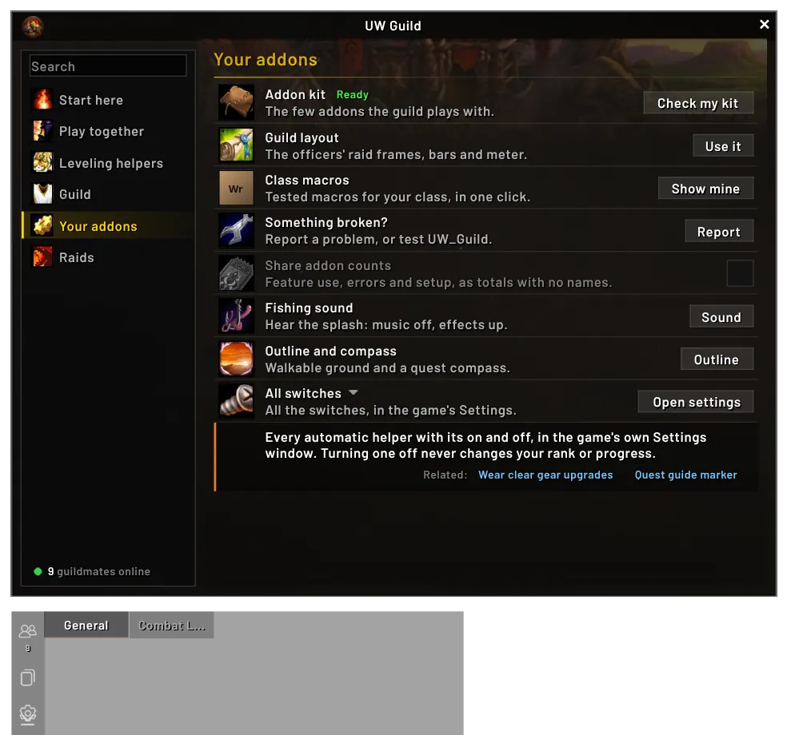
UW Guild · Your addons · Search · Addon kit · Ready · Start here · Check my kit · The few addons the guild plays with. · Play together · Guild layout · Use it · The officers' raid frames, bars and meter. · Leveling helpers · Class macros · Show mine · Guild · Tested macros for your class, in one click. · Something broken? · Report · Report a problem, or test UW_Guild. · Raids · Share addon counts · Feature use, errors and setup, as totals with no names. · Fishing sound · Sound · Hear the splash: music off, effects up. · Outline and compass · Outline · Walkable ground and a quest compass. · All switches · Open settings · All the switches, in the game's Settings. · Every automatic helper with its on and off, in the game's own Settings window. Turning one off never changes your rank or progress. · Related: · Wear clear gear upgrades · Quest guide marker · 9 guildmates online
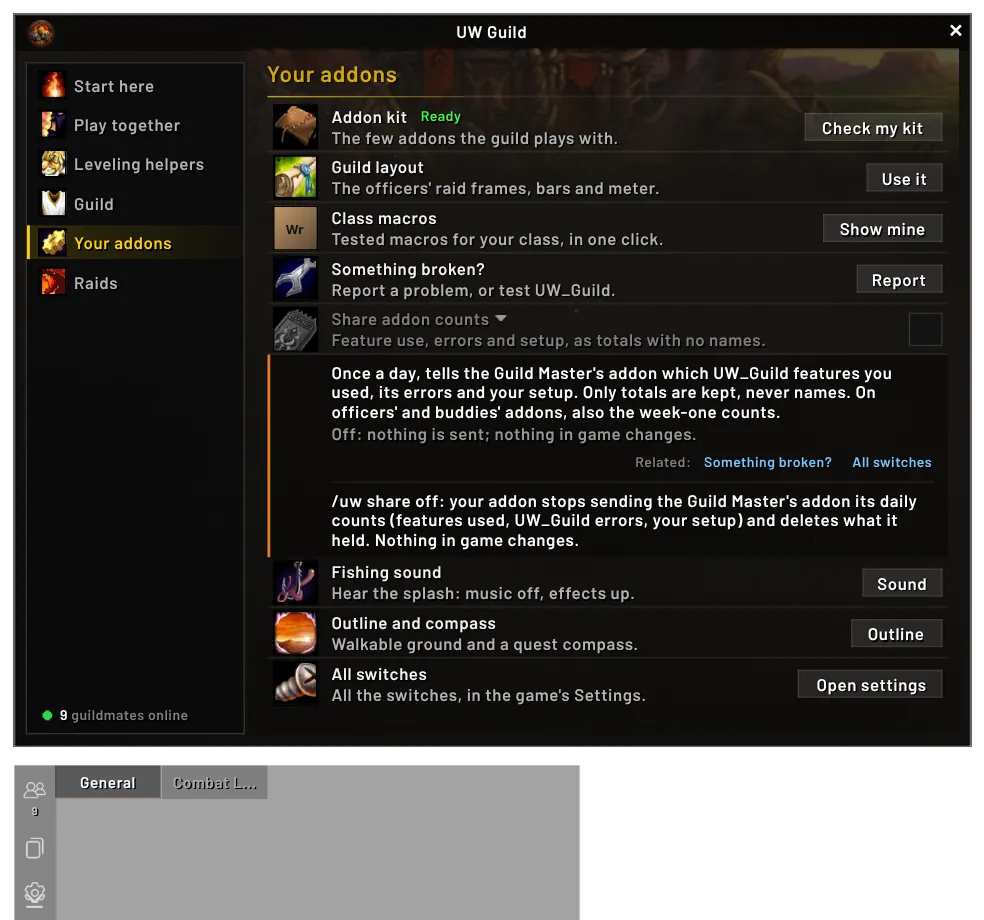
UW Guild · Your addons · Search · Addon kit · Ready · Start here · Check my kit · The few addons the guild plays with. · Play together · Guild layout · Use it · The officers' raid frames, bars and meter. · Leveling helpers · Class macros · Show mine · Tested macros for your class, in one click. · Guild · Something broken? · Report · Report a problem, or test UW_Guild. · Share addon counts · Raids · Feature use, errors and setup, as totals with no names. · Once a day, tells the Guild Master's addon which UW_Guild features you used, its errors and your setup. Only totals are kept, never names. On officers' and buddies' addons, also the week-one counts. · Off: nothing is sent; nothing in game changes. · Related: · All switches · /uw share off: your addon stops sending the Guild Master's addon its daily counts (features used, UW_Guild errors, your setup) and deletes what it held. Nothing in game changes. · Fishing sound · Sound · Hear the splash: music off, effects up. · Outline and compass · Outline · Walkable ground and a quest compass. · Open settings · All the switches, in the game's Settings. · 9 guildmates online
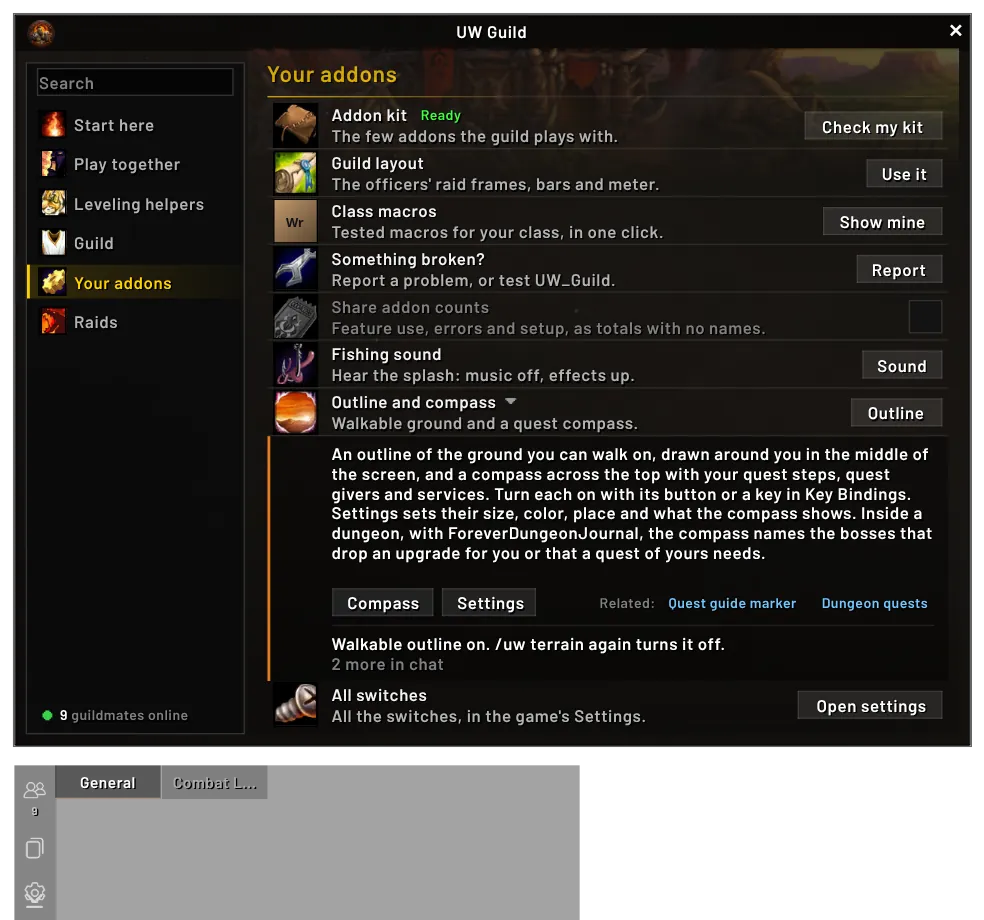
UW Guild · Your addons · Search · Addon kit · Ready · Start here · Check my kit · The few addons the guild plays with. · Guild layout · Play together · Use it · The officers' raid frames, bars and meter. · Leveling helpers · Class macros · Show mine · Tested macros for your class, in one click. · Guild · Something broken? · Report · Report a problem, or test UW_Guild. · Share addon counts · Raids · Feature use, errors and setup, as totals with no names. · Fishing sound · Sound · Hear the splash: music off, effects up. · Outline and compass · Outline · Walkable ground and a quest compass. · An outline of the ground you can walk on, drawn around you in the middle of the screen, and a compass across the top with your quest steps, quest givers and services. Turn each on with its button or a key in Key Bindings. Settings sets their size, color, place and what the compass shows. Inside a dungeon, with ForeverDungeonJournal, the compass names the bosses that drop an upgrade for you or that a quest of yours needs. · Compass · Settings · Related: · Quest guide marker · Dungeon quests · Walkable outline on. /uw terrain again turns it off. 2 more in chat · All switches · Open settings · 9 guildmates online · All the switches, in the game's Settings.
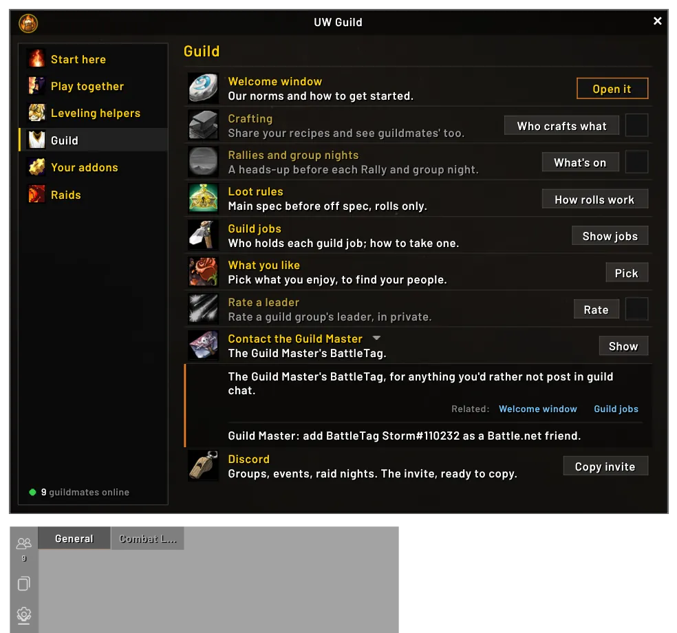
UW Guild · Guild · Search · Welcome window · Start here · Open it · Our norms and how to get started. · Play together · Crafting · Who crafts what · Share your recipes and see guildmates' too. · Leveling helpers · Rallies and group nights · What's on · A heads-up before each Rally and group night. · Loot rules · Your addons · How rolls work · Main spec before off spec, rolls only. · Raids · Guild jobs · Show jobs · Who holds each guild job; how to take one. · What you like · Pick · Pick what you enjoy, to find your people. · Rate a leader · Rate · Rate a guild group's leader, in private. · Contact the Guild Master · Show · The Guild Master's BattleTag. · The Guild Master's BattleTag, for anything you'd rather not post in guild chat. · Related: · Guild Master: add BattleTag Storm#110232 as a Battle.net friend. · Discord · Copy invite · Groups, events, raid nights. The invite, ready to copy. · 9 guildmates online
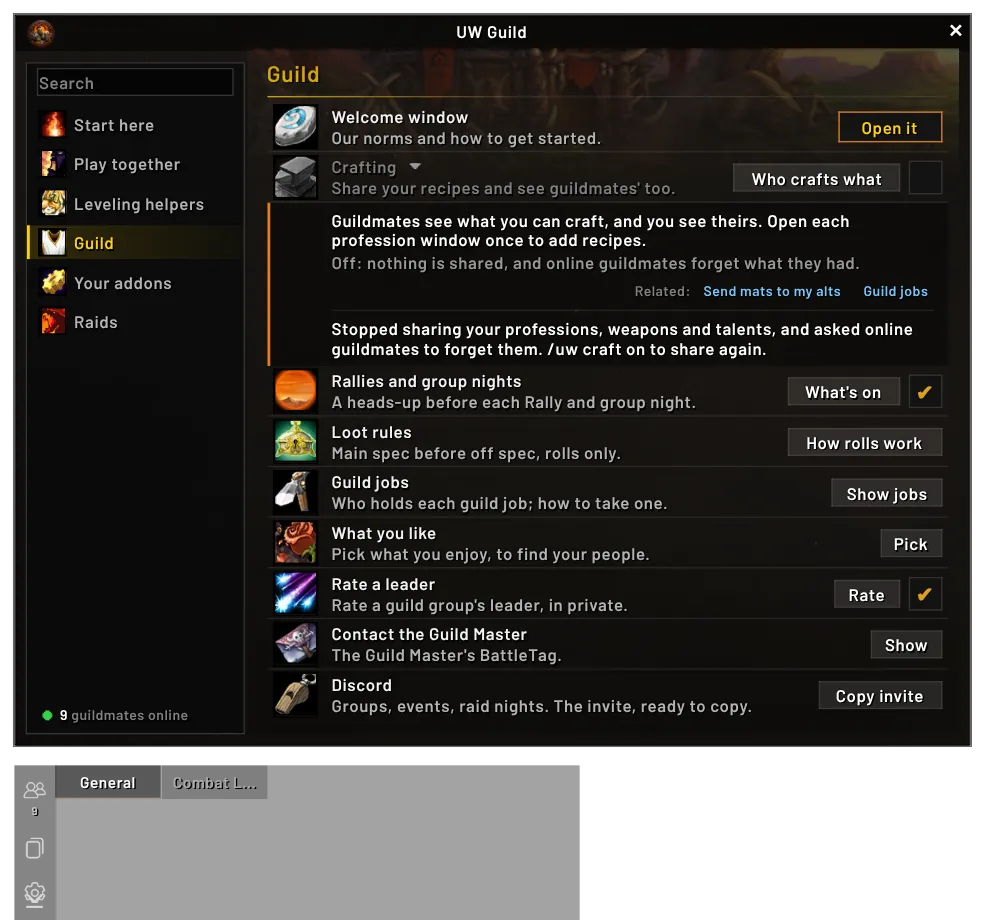
UW Guild · Guild · Search · Welcome window · Start here · Open it · Our norms and how to get started. · Play together · Crafting · Who crafts what · Share your recipes and see guildmates' too. · Leveling helpers · Guildmates see what you can craft, and you see theirs. Open each profession window once to add recipes. · Off: nothing is shared, and online guildmates forget what they had. · Your addons · Related: · Send mats to my alts · Guild jobs · Raids · Stopped sharing your professions, weapons and talents, and asked online guildmates to forget them. /uw craft on to share again. · Rallies and group nights · What's on · A heads-up before each Rally and group night. · Loot rules · How rolls work · Main spec before off spec, rolls only. · Show jobs · Who holds each guild job; how to take one. · What you like · Pick · Pick what you enjoy, to find your people. · Rate a leader · Rate · Rate a guild group's leader, in private. · Contact the Guild Master · Show · The Guild Master's BattleTag. · Discord · Copy invite · Groups, events, raid nights. The invite, ready to copy. · 9 guildmates online
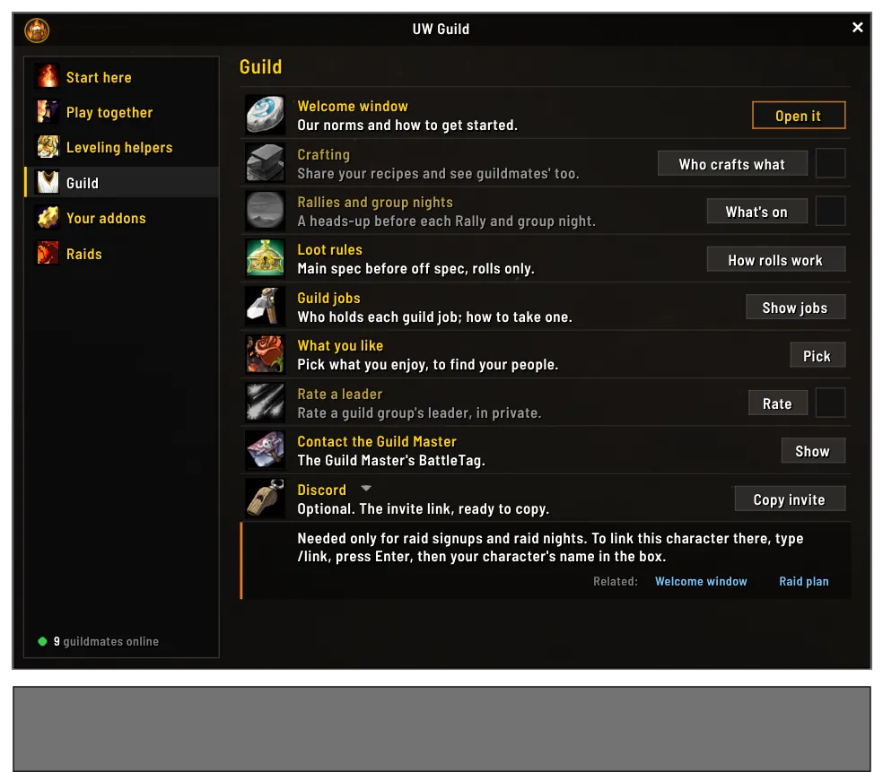
UW Guild · Guild · Search · Welcome window · Start here · Open it · Our norms and how to get started. · Play together · Crafting · Who crafts what · Share your recipes and see guildmates' too. · Leveling helpers · Rallies and group nights · What's on · A heads-up before each Rally and group night. · Loot rules · Your addons · How rolls work · Main spec before off spec, rolls only. · Raids · Guild jobs · Show jobs · Who holds each guild job; how to take one. · What you like · Pick · Pick what you enjoy, to find your people. · Rate a leader · Rate · Rate a guild group's leader, in private. · Contact the Guild Master · Show · The Guild Master's BattleTag. · Discord · Copy invite · Groups, events, raid nights. The invite, ready to copy. · Where groups and events come together. Raids need it, even just to listen. To link this character there, type /link, press Enter, then your character's name in the box. · Related: · Raid plan · 9 guildmates online
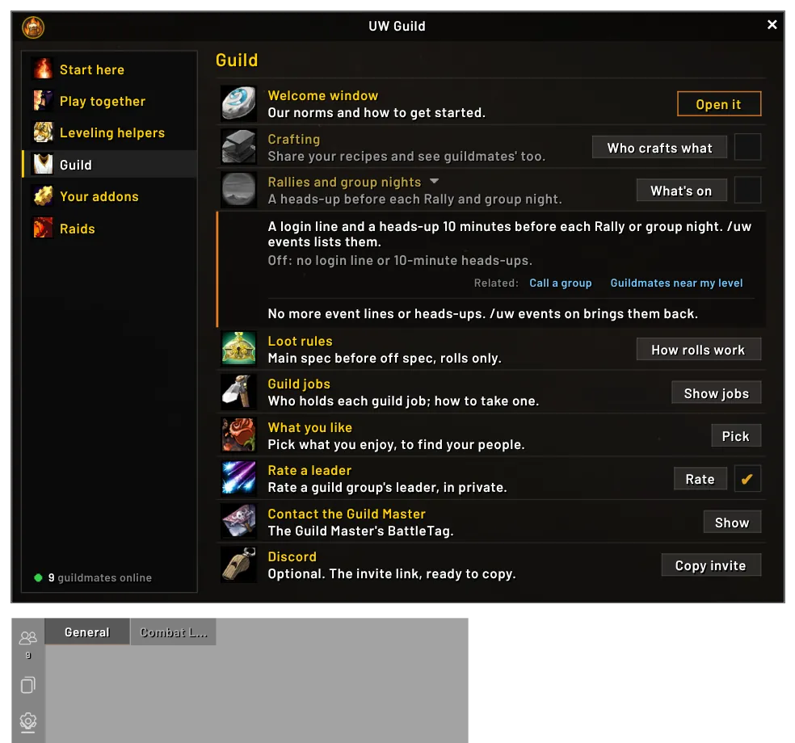
UW Guild · Guild · Search · Welcome window · Start here · Open it · Our norms and how to get started. · Play together · Crafting · Who crafts what · Share your recipes and see guildmates' too. · Leveling helpers · Rallies and group nights · What's on · A heads-up before each Rally and group night. · A login line and a heads-up 10 minutes before each Rally or group night. /uw events lists them. · Your addons · Raids · Off: no login line or 10-minute heads-ups. · Related: · Call a group · Guildmates near my level · No more event lines or heads-ups. /uw events on brings them back. · Loot rules · How rolls work · Main spec before off spec, rolls only. · Guild jobs · Show jobs · Who holds each guild job; how to take one. · What you like · Pick · Pick what you enjoy, to find your people. · Rate a leader · Rate · Rate a guild group's leader, in private. · Contact the Guild Master · Show · The Guild Master's BattleTag. · Discord · Copy invite · Groups, events, raid nights. The invite, ready to copy. · 9 guildmates online
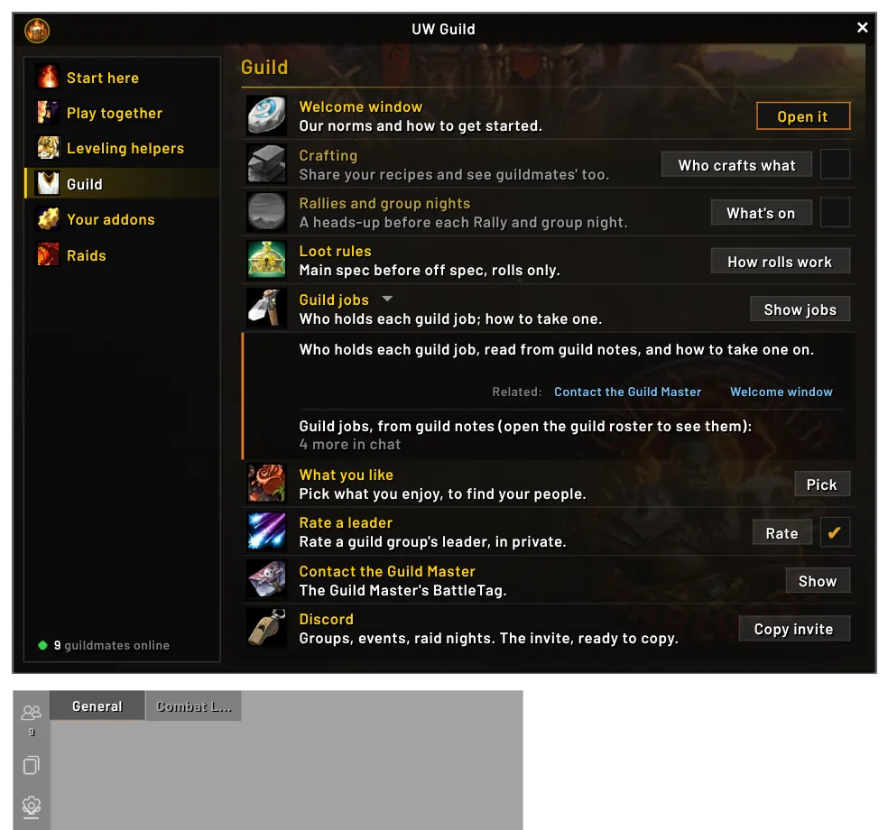
UW Guild · Guild · Search · Welcome window · Start here · Open it · Our norms and how to get started. · Play together · Crafting · Who crafts what · Share your recipes and see guildmates' too. · Leveling helpers · Rallies and group nights · What's on · A heads-up before each Rally and group night. · Loot rules · Your addons · How rolls work · Main spec before off spec, rolls only. · Raids · Guild jobs · Show jobs · Who holds each guild job; how to take one. · Who holds each guild job, read from guild notes, and how to take one on. · Related: · Contact the Guild Master · Guild jobs, from guild notes (open the guild roster to see them): 4 more in chat · What you like · Pick · Pick what you enjoy, to find your people. · Rate a leader · Rate · Rate a guild group's leader, in private. · Show · The Guild Master's BattleTag. · Discord · Copy invite · Groups, events, raid nights. The invite, ready to copy. · 9 guildmates online
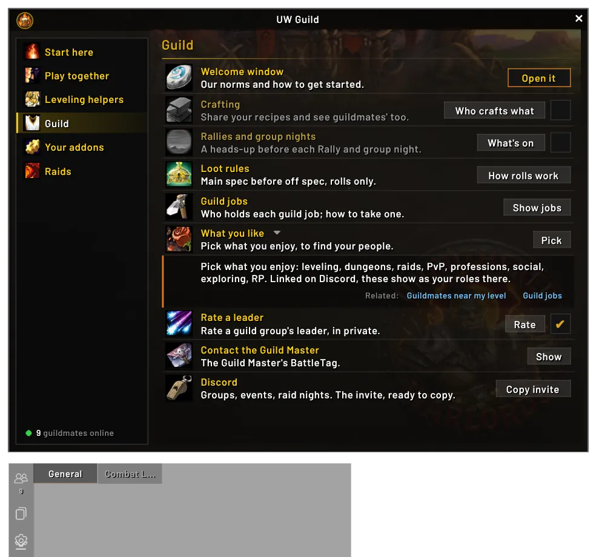
UW Guild · Guild · Search · Welcome window · Start here · Open it · Our norms and how to get started. · Play together · Crafting · Who crafts what · Share your recipes and see guildmates' too. · Leveling helpers · Rallies and group nights · What's on · A heads-up before each Rally and group night. · Loot rules · Your addons · How rolls work · Main spec before off spec, rolls only. · Raids · Guild jobs · Show jobs · Who holds each guild job; how to take one. · What you like · Pick · Pick what you enjoy, to find your people. · Pick what you enjoy: leveling, dungeons, raids, PvP, professions, social, exploring, RP. Linked on Discord, these show as your roles there. · Related: · Guildmates near my level · Rate a leader · Rate · Rate a guild group's leader, in private. · Contact the Guild Master · Show · The Guild Master's BattleTag. · Discord · Copy invite · Groups, events, raid nights. The invite, ready to copy. · 9 guildmates online
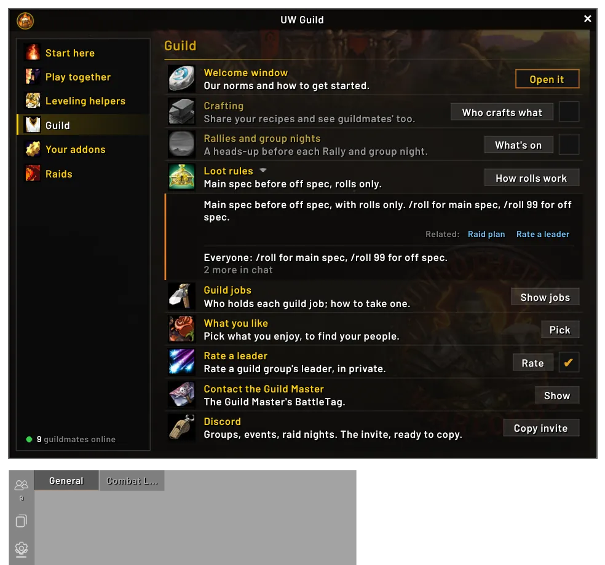
UW Guild · Guild · Search · Welcome window · Start here · Open it · Our norms and how to get started. · Play together · Crafting · Who crafts what · Share your recipes and see guildmates' too. · Leveling helpers · Rallies and group nights · What's on · A heads-up before each Rally and group night. · Loot rules · Your addons · How rolls work · Main spec before off spec, rolls only. · Raids · Main spec before off spec, with rolls only. /roll for main spec, /roll 99 for off spec. · Related: · Raid plan · Rate a leader · Everyone: /roll for main spec, /roll 99 for off spec. 2 more in chat · Guild jobs · Show jobs · Who holds each guild job; how to take one. · What you like · Pick · Pick what you enjoy, to find your people. · Rate · Rate a guild group's leader, in private. · Contact the Guild Master · Show · The Guild Master's BattleTag. · Discord · Copy invite · Groups, events, raid nights. The invite, ready to copy. · 9 guildmates online
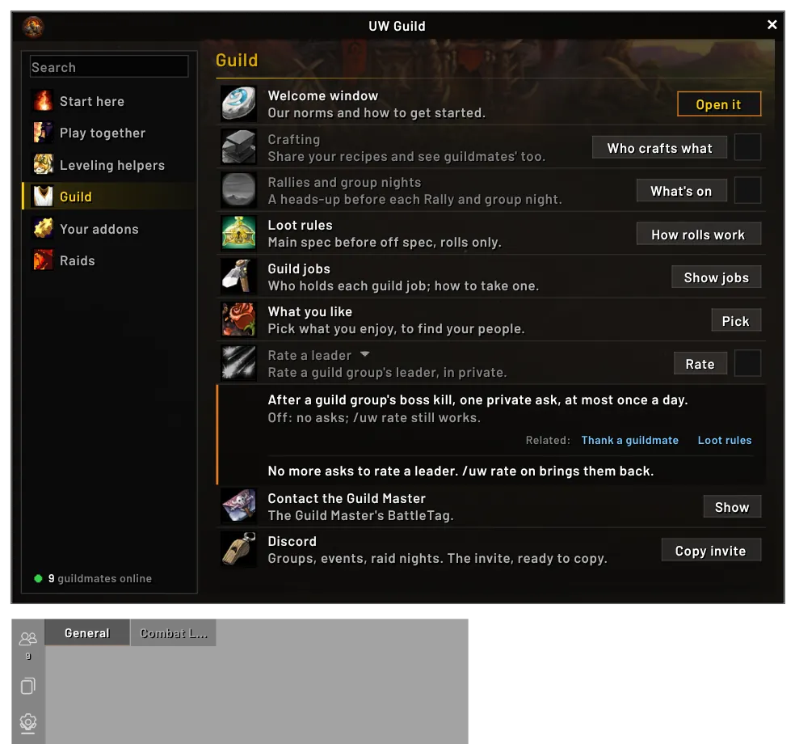
UW Guild · Guild · Search · Welcome window · Start here · Open it · Our norms and how to get started. · Play together · Crafting · Who crafts what · Share your recipes and see guildmates' too. · Leveling helpers · Rallies and group nights · What's on · A heads-up before each Rally and group night. · Loot rules · Your addons · How rolls work · Main spec before off spec, rolls only. · Raids · Guild jobs · Show jobs · Who holds each guild job; how to take one. · What you like · Pick · Pick what you enjoy, to find your people. · Rate a leader · Rate · Rate a guild group's leader, in private. · After a guild group's boss kill, one private ask, at most once a day. · Off: no asks; /uw rate still works. · Related: · Thank a guildmate · No more asks to rate a leader. /uw rate on brings them back. · Contact the Guild Master · Show · The Guild Master's BattleTag. · Discord · Copy invite · Groups, events, raid nights. The invite, ready to copy. · 9 guildmates online
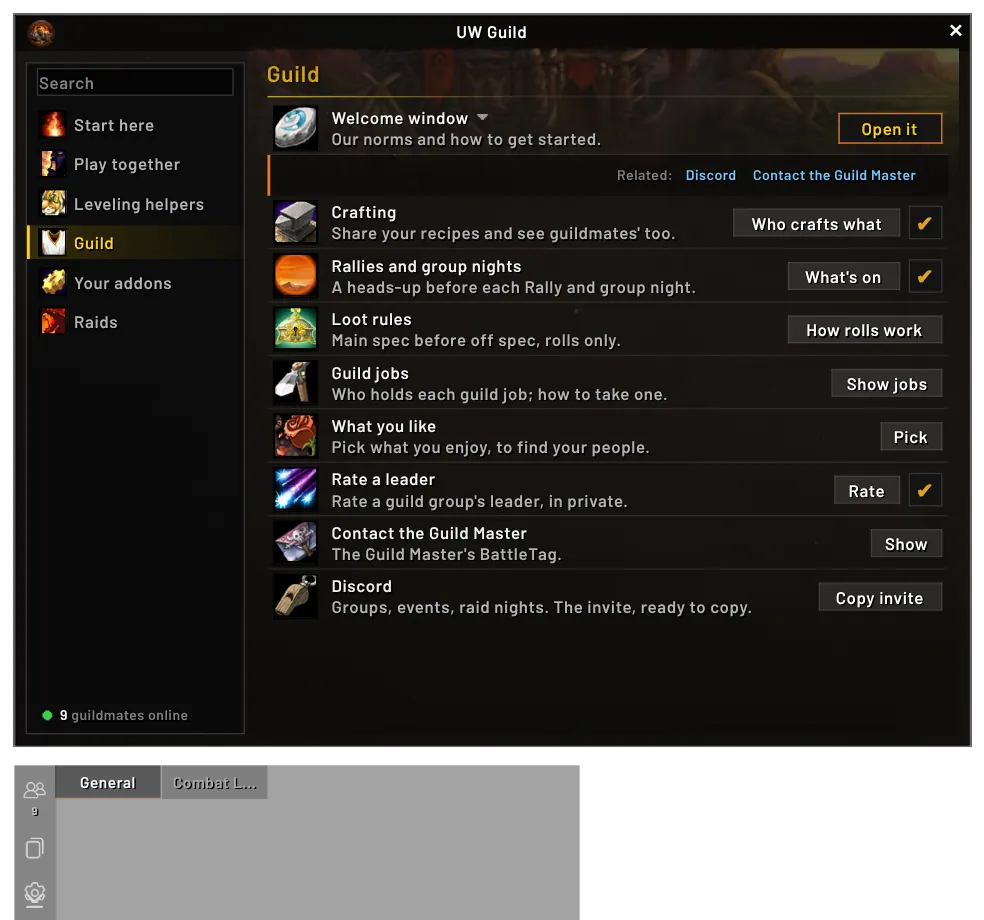
UW Guild · Guild · Search · Welcome window · Start here · Open it · Our norms and how to get started. · Play together · Related: · Discord · Contact the Guild Master · Leveling helpers · Crafting · Who crafts what · Share your recipes and see guildmates' too. · Rallies and group nights · What's on · Your addons · A heads-up before each Rally and group night. · Loot rules · Raids · How rolls work · Main spec before off spec, rolls only. · Guild jobs · Show jobs · Who holds each guild job; how to take one. · What you like · Pick · Pick what you enjoy, to find your people. · Rate a leader · Rate · Rate a guild group's leader, in private. · Show · The Guild Master's BattleTag. · Copy invite · Groups, events, raid nights. The invite, ready to copy. · 9 guildmates online
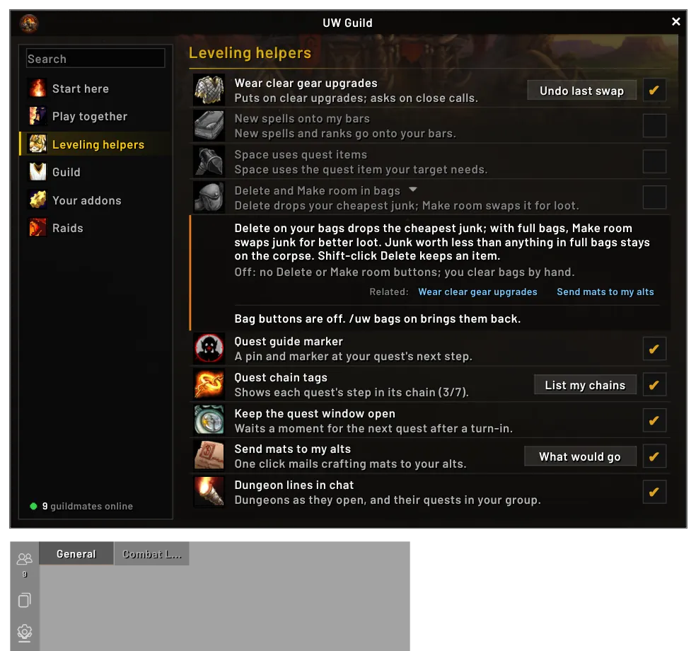
UW Guild · Leveling helpers · Search · Wear clear gear upgrades · Start here · Undo last swap · Puts on clear upgrades; asks on close calls. · Play together · New spells onto my bars · New spells and ranks go onto your bars. · Space uses quest items · Space uses the quest item your target needs. · Guild · Delete and Make room in bags · Your addons · Delete drops your cheapest junk; Make room swaps it for loot. · Raids · Delete on your bags drops the cheapest junk; with full bags, Make room swaps junk for better loot. Junk worth less than anything in full bags stays on the corpse. Shift-click Delete keeps an item. · Off: no Delete or Make room buttons; you clear bags by hand. · Related: · Send mats to my alts · Bag buttons are off. /uw bags on brings them back. · Quest guide marker · A pin and marker at your quest's next step. · Quest chain tags · List my chains · Shows each quest's step in its chain (3/7). · Keep the quest window open · Waits a moment for the next quest after a turn-in. · What would go · One click mails crafting mats to your alts. · Dungeon lines in chat · Dungeons as they open, and their quests in your group. · 9 guildmates online
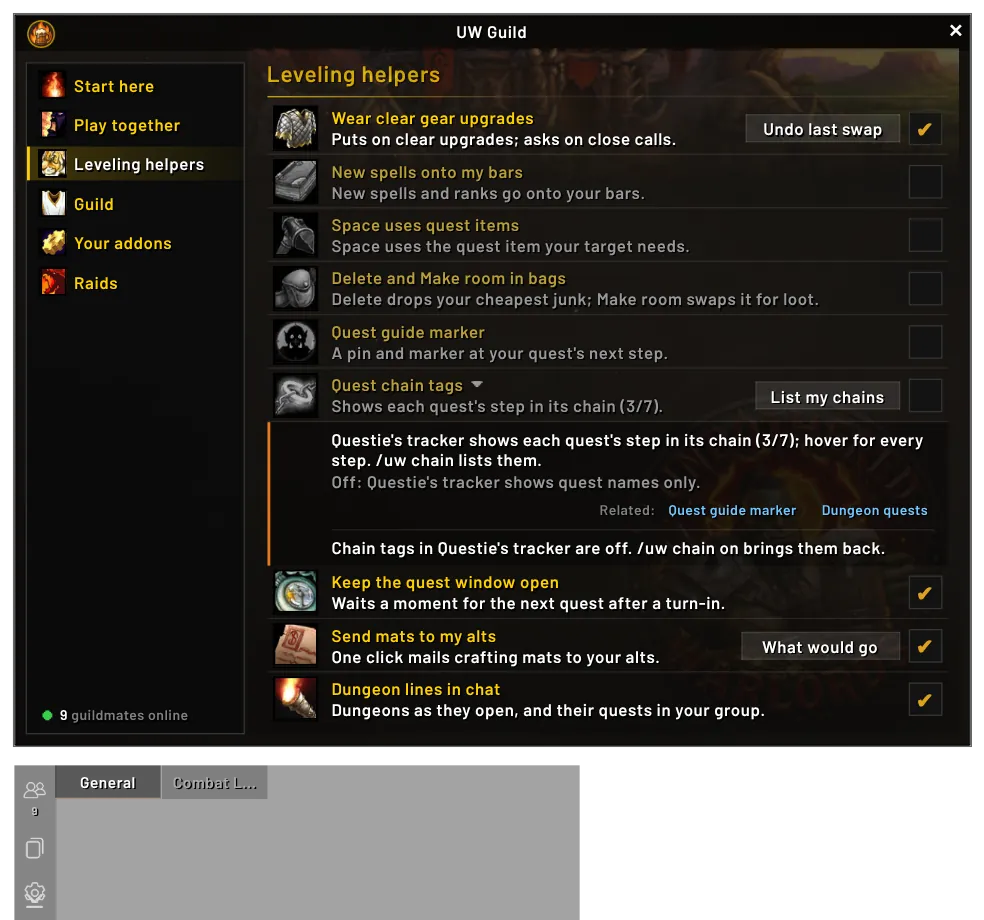
UW Guild · Leveling helpers · Search · Wear clear gear upgrades · Start here · Undo last swap · Puts on clear upgrades; asks on close calls. · Play together · New spells onto my bars · New spells and ranks go onto your bars. · Space uses quest items · Guild · Space uses the quest item your target needs. · Delete and Make room in bags · Your addons · Delete drops your cheapest junk; Make room swaps it for loot. · Raids · Quest guide marker · A pin and marker at your quest's next step. · Quest chain tags · List my chains · Shows each quest's step in its chain (3/7). · Questie's tracker shows each quest's step in its chain (3/7); hover for every step. /uw chain lists them. · Off: Questie's tracker shows quest names only. · Related: · Dungeon quests · Chain tags in Questie's tracker are off. /uw chain on brings them back. · Keep the quest window open · Waits a moment for the next quest after a turn-in. · Send mats to my alts · What would go · One click mails crafting mats to your alts. · Dungeon lines in chat · Dungeons as they open, and their quests in your group. · 9 guildmates online
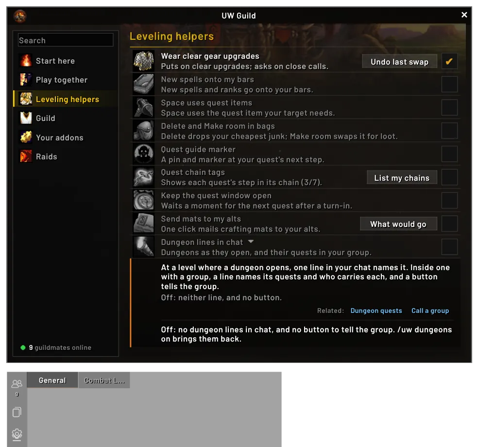
UW Guild · Leveling helpers · Search · Wear clear gear upgrades · Start here · Undo last swap · Puts on clear upgrades; asks on close calls. · New spells onto my bars · Play together · New spells and ranks go onto your bars. · Space uses quest items · Space uses the quest item your target needs. · Guild · Delete and Make room in bags · Your addons · Delete drops your cheapest junk; Make room swaps it for loot. · Quest guide marker · Raids · A pin and marker at your quest's next step. · Quest chain tags · List my chains · Shows each quest's step in its chain (3/7). · Keep the quest window open · Waits a moment for the next quest after a turn-in. · Send mats to my alts · What would go · One click mails crafting mats to your alts. · Dungeon lines in chat · Dungeons as they open, and their quests in your group. · At a level where a dungeon opens, one line in your chat names it. Inside one with a group, a line names its quests and who carries each, and a button tells the group. · Off: neither line, and no button. · Related: · Dungeon quests · Call a group · Off: no dungeon lines in chat, and no button to tell the group. /uw dungeons on brings them back. · 9 guildmates online
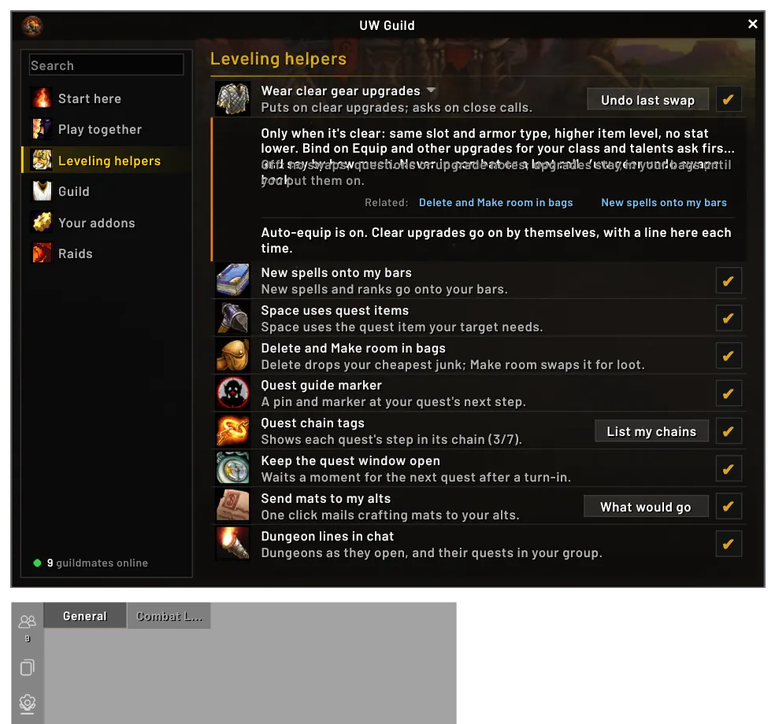
UW Guild · Leveling helpers · Search · Wear clear gear upgrades · Start here · Undo last swap · Puts on clear upgrades; asks on close calls. · Play together · Only when it's clear: same slot and armor type, higher item level, no stat lower. Bind on Equip and other upgrades for your class and talents ask first, and say by how much. Never in combat or a loot roll. /uw gear undo swaps back. · Off: no swaps, questions or upgrade notes; upgrades stay in your bags until you put them on. · Guild · Related: · Delete and Make room in bags · New spells onto my bars · Your addons · Auto-equip is on. Clear upgrades go on by themselves, with a line here each time. · Raids · New spells and ranks go onto your bars. · Space uses quest items · Space uses the quest item your target needs. · Delete drops your cheapest junk; Make room swaps it for loot. · Quest guide marker · A pin and marker at your quest's next step. · Quest chain tags · List my chains · Shows each quest's step in its chain (3/7). · Keep the quest window open · Waits a moment for the next quest after a turn-in. · Send mats to my alts · What would go · One click mails crafting mats to your alts. · Dungeon lines in chat · Dungeons as they open, and their quests in your group. · 9 guildmates online
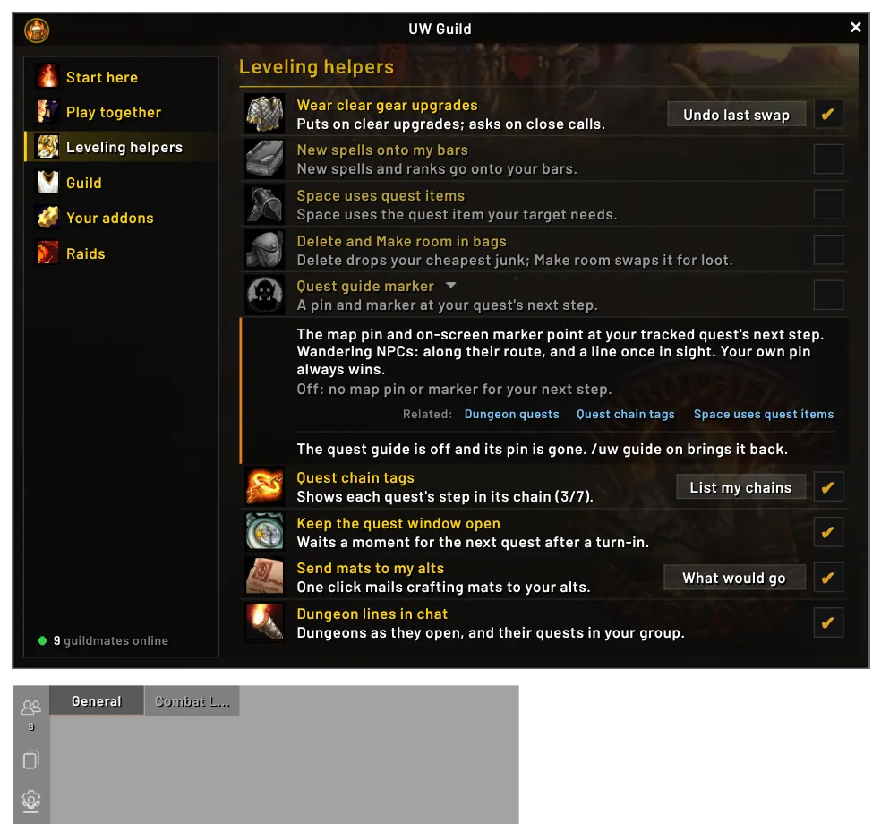
UW Guild · Leveling helpers · Search · Wear clear gear upgrades · Start here · Undo last swap · Puts on clear upgrades; asks on close calls. · Play together · New spells onto my bars · New spells and ranks go onto your bars. · Space uses quest items · Space uses the quest item your target needs. · Guild · Delete and Make room in bags · Your addons · Delete drops your cheapest junk; Make room swaps it for loot. · Quest guide marker · Raids · A pin and marker at your quest's next step. · The map pin and on-screen marker point at your tracked quest's next step. Wandering NPCs: along their route, and a line once in sight. Your own pin always wins. · Off: no map pin or marker for your next step. · Related: · Dungeon quests · Quest chain tags · The quest guide is off and its pin is gone. /uw guide on brings it back. · List my chains · Shows each quest's step in its chain (3/7). · Keep the quest window open · Waits a moment for the next quest after a turn-in. · Send mats to my alts · What would go · One click mails crafting mats to your alts. · Dungeon lines in chat · Dungeons as they open, and their quests in your group. · 9 guildmates online
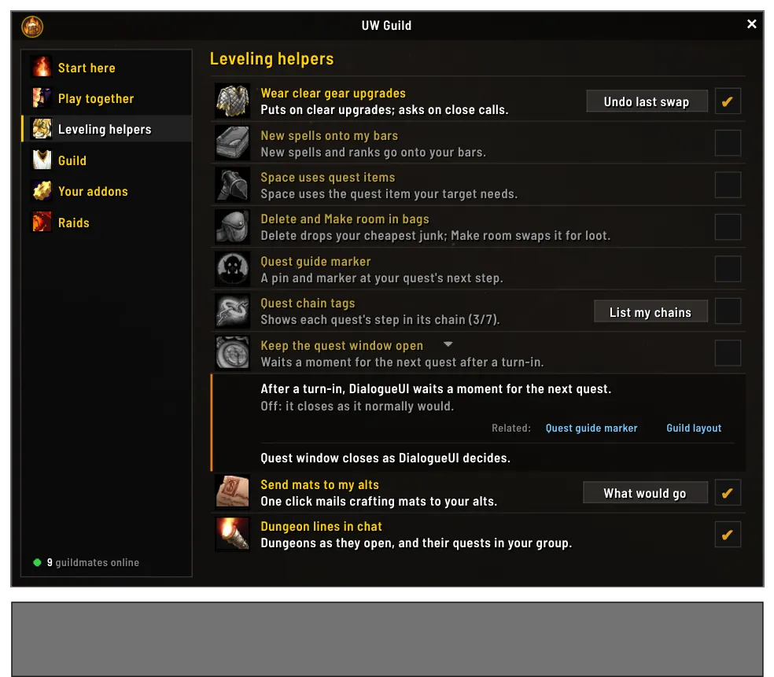
UW Guild · Leveling helpers · Search · Wear clear gear upgrades · Start here · Undo last swap · Puts on clear upgrades; asks on close calls. · Play together · New spells onto my bars · New spells and ranks go onto your bars. · Space uses quest items · Guild · Space uses the quest item your target needs. · Delete and Make room in bags · Your addons · Delete drops your cheapest junk; Make room swaps it for loot. · Raids · Quest guide marker · A pin and marker at your quest's next step. · Quest chain tags · List my chains · Shows each quest's step in its chain (3/7). · Keep the quest window open · Waits a moment for the next quest after a turn-in. · After a turn-in, DialogueUI waits a moment for the next quest. · Off: it closes as it normally would. · Related: · Guild layout · Quest window closes as DialogueUI decides. · Send mats to my alts · What would go · One click mails crafting mats to your alts. · Dungeon lines in chat · Dungeons as they open, and their quests in your group. · 9 guildmates online
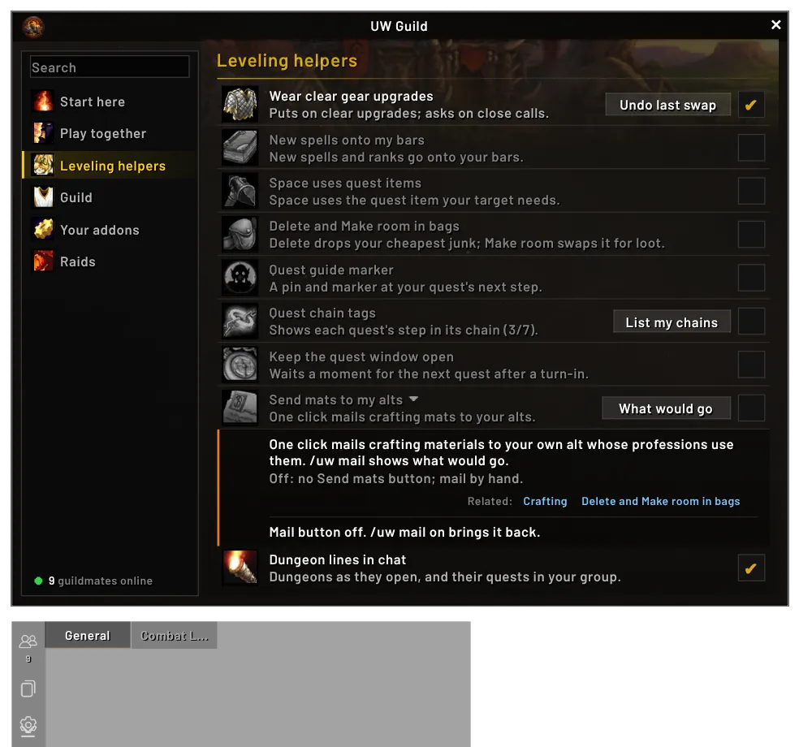
UW Guild · Leveling helpers · Search · Wear clear gear upgrades · Start here · Undo last swap · Puts on clear upgrades; asks on close calls. · Play together · New spells onto my bars · New spells and ranks go onto your bars. · Space uses quest items · Guild · Space uses the quest item your target needs. · Delete and Make room in bags · Your addons · Delete drops your cheapest junk; Make room swaps it for loot. · Raids · Quest guide marker · A pin and marker at your quest's next step. · Quest chain tags · List my chains · Shows each quest's step in its chain (3/7). · Keep the quest window open · Waits a moment for the next quest after a turn-in. · Send mats to my alts · What would go · One click mails crafting mats to your alts. · One click mails crafting materials to your own alt whose professions use them. /uw mail shows what would go. · Off: no Send mats button; mail by hand. · Related: · Crafting · Mail button off. /uw mail on brings it back. · Dungeon lines in chat · Dungeons as they open, and their quests in your group. · 9 guildmates online
UW Guild · Leveling helpers · Search · Wear clear gear upgrades · Start here · Undo last swap · Puts on clear upgrades; asks on close calls. · Play together · New spells onto my bars · New spells and ranks go onto your bars. · Space uses quest items · Guild · Space uses the quest item your target needs. · When your target is part of a quest you carry an item for, and it's in range, Space uses the item. Shift+Space uses it in fights too. · Your addons · Raids · Off: Space only jumps. · Related: · Quest guide marker · Quest chain tags · Space for quest items is off. /uw space on turns it back on. · Delete and Make room in bags · Delete drops your cheapest junk; Make room swaps it for loot. · A pin and marker at your quest's next step. · List my chains · Shows each quest's step in its chain (3/7). · Keep the quest window open · Waits a moment for the next quest after a turn-in. · Send mats to my alts · What would go · One click mails crafting mats to your alts. · Dungeon lines in chat · Dungeons as they open, and their quests in your group. · 9 guildmates online
UW Guild · Play together · Search · Guildmates near my level · Start here · Find guildmates · Who's on near your level, free ones first. · Call a group · Calls a group for your level in guild chat. · Leveling helpers · Dungeon quests · Blackfathom Deeps · Guild · Leads you to a dungeon's quests and its door. · Meet point · Your addons · Needs a group · Your group's markers point at you to meet up. · Raids · Thank a guildmate · Target them first · Thank someone you just grouped with. · Ask a guild enchanter · Best per slot · Ask an online enchanter from your character panel. · Count my alts as me · Your characters count as one person. · UW_Guild tells the guild bot which characters on this account are yours, so alts count as you. The list is never shown to anyone. · Off: your characters count as separate people. · Related: · Off: your characters count as separate people. /uw alts on turns it back on. · 9 guildmates online
UW Guild · Play together · Search · Guildmates near my level · Start here · Find guildmates · Who's on near your level, free ones first. · Call a group · Calls a group for your level in guild chat. · Leveling helpers · Writes a line in guild chat for the dungeon at your level, then you invite whoever types inv. Anyone can also just ask in guild chat. · Guild · Related: · Dungeon quests · Thank a guildmate · Your addons · Raids · Blackfathom Deeps · Leads you to a dungeon's quests and its door. · Meet point · Needs a group · Your group's markers point at you to meet up. · Target them first · Thank someone you just grouped with. · Ask a guild enchanter · Best per slot · Ask an online enchanter from your character panel. · Count my alts as me · Your characters count as one person. · 9 guildmates online
UW Guild · Play together · Search · Guildmates near my level · Start here · Find guildmates · Who's on near your level, free ones first. · Call a group · Calls a group for your level in guild chat. · Leveling helpers · Dungeon quests · Blackfathom Deeps · Guild · Leads you to a dungeon's quests and its door. · Meet point · Your addons · Needs a group · Your group's markers point at you to meet up. · Raids · Thank a guildmate · Target them first · Thank someone you just grouped with. · Ask a guild enchanter · Best per slot · Ask an online enchanter from your character panel. · The icon under your wrist slot lists enchants online guildmates can make for your gear, best value for your level, gear and gold first. Click one to whisper them. A notice says when one is near you. · Hide the button · Related: · Crafting · No guild enchanter knows an enchant for your gear yet. · Count my alts as me · Your characters count as one person. · 9 guildmates online
UW Guild · Play together · Search · Guildmates near my level · Start here · Find guildmates · Who's on near your level, free ones first. · Call a group · Calls a group for your level in guild chat. · Leveling helpers · Dungeon quests · Blackfathom Deeps · Guild · Leads you to a dungeon's quests and its door. · Meet point · Your addons · Needs a group · Your group's markers point at you to meet up. · Raids · In a group, your spot becomes the group's meet point: their markers point at you until you clear it. · Clear it · Related: · Quest guide marker · Thank a guildmate · Target them first · Thank someone you just grouped with. · Ask a guild enchanter · Best per slot · Ask an online enchanter from your character panel. · Count my alts as me · Your characters count as one person. · 9 guildmates online
UW Guild · Play together · Search · Guildmates near my level · Start here · Find guildmates · Who's on near your level, free ones first. · Who's online within a few levels of you, free ones first. Click a name in chat to whisper or invite. · Leveling helpers · Related: · Call a group · Dungeon quests · Meet point · Guild · Calls a group for your level in guild chat. · Your addons · Raids · Blackfathom Deeps · Leads you to a dungeon's quests and its door. · Needs a group · Your group's markers point at you to meet up. · Thank a guildmate · Target them first · Thank someone you just grouped with. · Ask a guild enchanter · Best per slot · Ask an online enchanter from your character panel. · Count my alts as me · Your characters count as one person. · 9 guildmates online
UW Guild · Play together · Search · Guildmates near my level · Start here · Find guildmates · Who's on near your level, free ones first. · Call a group · Calls a group for your level in guild chat. · Leveling helpers · Dungeon quests · Blackfathom Deeps · Guild · Leads you to a dungeon's quests and its door. · Before a dungeon, an arrow walks you to each of its quests you can take now, then to the entrance. Pick one near your level. · Your addons · Raids · Shadowfang Keep · Razorfen Kraul · Related: · Quest guide marker · Dungeon prep needs Questie (with QuestieDB): /uw kit shows where to get it. · Meet point · Needs a group · Your group's markers point at you to meet up. · Thank a guildmate · Target them first · Thank someone you just grouped with. · Ask a guild enchanter · Best per slot · Ask an online enchanter from your character panel. · Count my alts as me · Your characters count as one person. · 9 guildmates online
UW Guild · Play together · Search · Guildmates near my level · Start here · Find guildmates · Who's on near your level, free ones first. · Call a group · Calls a group for your level in guild chat. · Leveling helpers · Dungeon quests · Blackfathom Deeps · Guild · Leads you to a dungeon's quests and its door. · Meet point · Your addons · Needs a group · Your group's markers point at you to meet up. · Raids · Thank a guildmate · Target them first · Thank someone you just grouped with. · Thank someone you grouped with in the last 3 hours. It counts toward their Officer path. Once a day each. · Related: · Rate a leader · Ask a guild enchanter · Best per slot · Ask an online enchanter from your character panel. · Count my alts as me · Your characters count as one person. · 9 guildmates online
UW Guild · Raids · Search · Raid plan · Start here · Show my plan · Your own job in each step of the raid plan. · Play together · The raid leader pastes the plan code; you see your lines. · Related: · Loot rules · Addon kit · Leveling helpers · No plan yet. Your raid leader sends one before the pull, from the boss's guide in Discord. · Guild · Your addons · Raid records · Kills and loot, shared live. Want to raid? Tell any officer. · 9 guildmates online
UW Guild · Raids · Search · Raid plan · Start here · Show my plan · Your own job in each step of the raid plan. · Play together · Raid records · Kills and loot, shared live. Want to raid? Tell any officer. · Leveling helpers · Guild kills, attendance and loot awards, shared live from the raid. · Guild · Related: · Loot rules · Your addons · 9 guildmates online
UW Guild · Start here · Picked for you now. Level 24, member. · Search · Guildmates near my level · Who's on near your level, free ones first. · Play together · Nell Brook · 22 · The Barrens · Leveling helpers · Lio Pell · 23 · Wailing Caverns · busy · Guild · Find guildmates · Your addons · Dungeon quests · Blackfathom Deeps · Leads you to a dungeon's quests and its door. · Raids · Call a group · Calls a group for your level in guild chat. · Writes a line in guild chat for the dungeon at your level, then you invite whoever types inv. Anyone can also just ask in guild chat. · Related: · Thank a guildmate · Wear clear gear upgrades · Undo last swap · Puts on clear upgrades; asks on close calls. · 9 guildmates online
UW Guild · Start here · Picked for you now. Level 24, member. · Search · Guildmates near my level · Who's on near your level, free ones first. · Play together · Nell Brook · 22 · The Barrens · Leveling helpers · Lio Pell · 23 · Wailing Caverns · busy · Guild · Find guildmates · Your addons · Dungeon quests · Blackfathom Deeps · Leads you to a dungeon's quests and its door. · Raids · Call a group · Calls a group for your level in guild chat. · Wear clear gear upgrades · Undo last swap · Puts on clear upgrades; asks on close calls. · Only when it's clear: same slot and armor type, higher item level, no stat lower. Bind on Equip and other upgrades for your class and talents ask first, and say by how much. Never in combat or a loot roll. /uw gear undo swaps back. · Off: no swaps, questions or upgrade notes; upgrades stay in your bags until you put them on. · Related: · Delete and Make room in bags · New spells onto my bars · Auto-equip is off on this account. /uw gear on turns it back on. · 9 guildmates online
UW Guild · Start here · Picked for you now. Level 24, member. · Search · Guildmates near my level · Who's on near your level, free ones first. · Play together · Nell Brook · 22 · The Barrens · Leveling helpers · Lio Pell · 23 · Wailing Caverns · busy · Guild · Find guildmates · Your addons · Who's online within a few levels of you, free ones first. Click a name in chat to whisper or invite. · Raids · Related: · Call a group · Dungeon quests · Meet point · Blackfathom Deeps · Leads you to a dungeon's quests and its door. · Calls a group for your level in guild chat. · Wear clear gear upgrades · Undo last swap · Puts on clear upgrades; asks on close calls. · 9 guildmates online
UW Guild · Start here · Picked for you now. Level 24, member. · Search · Guildmates near my level · Who's on near your level, free ones first. · Play together · Nell Brook · 22 · The Barrens · Leveling helpers · Lio Pell · 23 · Wailing Caverns · busy · Guild · Find guildmates · Your addons · Dungeon quests · Blackfathom Deeps · Leads you to a dungeon's quests and its door. · Raids · Before a dungeon, an arrow walks you to each of its quests you can take now, then to the entrance. Pick one near your level. · Shadowfang Keep · Razorfen Kraul · Related: · Call a group · Quest guide marker · Dungeon prep needs Questie (with QuestieDB): /uw kit shows where to get it. · Calls a group for your level in guild chat. · Wear clear gear upgrades · Undo last swap · Puts on clear upgrades; asks on close calls. · 9 guildmates online
UW Guild · Your addons · Search · Addon kit · Ready · Start here · Check my kit · The few addons the guild plays with. · Play together · Guild layout · Use it · The officers' raid frames, bars and meter. · Leveling helpers · Class macros · Show mine · Guild · Tested macros for your class, in one click. · Something broken? · Report · Report a problem, or test UW_Guild. · Raids · Share addon counts · Feature use, errors and setup, as totals with no names. · Fishing sound · Sound · Hear the splash: music off, effects up. · Outline and compass · Outline · Walkable ground and a quest compass. · All switches · Open settings · All the switches, in the game's Settings. · 9 guildmates online
UW Guild · Guild · Search · Welcome window · Start here · Open it · Our norms and how to get started. · Play together · Crafting · Who crafts what · Share your recipes and see guildmates' too. · Leveling helpers · Rallies and group nights · What's on · A heads-up before each Rally and group night. · Loot rules · Your addons · How rolls work · Main spec before off spec, rolls only. · Raids · Guild jobs · Show jobs · Who holds each guild job; how to take one. · What you like · Pick · Pick what you enjoy, to find your people. · Rate a leader · Rate · Rate a guild group's leader, in private. · Contact the Guild Master · Show · The Guild Master's BattleTag. · Discord · Copy invite · Groups, events, raid nights. The invite, ready to copy. · 9 guildmates online
UW Guild · Leveling helpers · Search · Wear clear gear upgrades · Start here · Undo last swap · Puts on clear upgrades; asks on close calls. · Play together · New spells onto my bars · New spells and ranks go onto your bars. · Space uses quest items · Guild · Space uses the quest item your target needs. · Delete and Make room in bags · Your addons · Delete drops your cheapest junk; Make room swaps it for loot. · Raids · Quest guide marker · A pin and marker at your quest's next step. · Quest chain tags · List my chains · Shows each quest's step in its chain (3/7). · Keep the quest window open · Waits a moment for the next quest after a turn-in. · Send mats to my alts · What would go · One click mails crafting mats to your alts. · Dungeon lines in chat · Dungeons as they open, and their quests in your group. · 9 guildmates online
UW Guild · Play together · Search · Guildmates near my level · Start here · Find guildmates · Who's on near your level, free ones first. · Call a group · Calls a group for your level in guild chat. · Leveling helpers · Dungeon quests · Blackfathom Deeps · Guild · Leads you to a dungeon's quests and its door. · Meet point · Your addons · Needs a group · Your group's markers point at you to meet up. · Raids · Thank a guildmate · Target them first · Thank someone you just grouped with. · Ask a guild enchanter · Best per slot · Ask an online enchanter from your character panel. · Count my alts as me · Your characters count as one person. · 9 guildmates online
UW Guild · Raids · Search · Raid plan · Start here · Show my plan · Your own job in each step of the raid plan. · Play together · Raid records · Kills and loot, shared live. Want to raid? Tell any officer. · Leveling helpers · Guild · Your addons · 9 guildmates online
UW Guild · Start here · Picked for you now. Level 24, member. · Search · Guildmates near my level · Who's on near your level, free ones first. · Play together · Nell Brook · 22 · The Barrens · Leveling helpers · Lio Pell · 23 · Wailing Caverns · busy · Guild · Find guildmates · Your addons · Dungeon quests · Blackfathom Deeps · Leads you to a dungeon's quests and its door. · Raids · Call a group · Calls a group for your level in guild chat. · Wear clear gear upgrades · Undo last swap · Puts on clear upgrades; asks on close calls. · 9 guildmates online
UW Guild · Your addons · Search · Addon kit · Ready · Start here · Check my kit · The few addons the guild plays with. · Play together · Guild layout · Use it · The officers' raid frames, bars and meter. · Leveling helpers · Class macros · Show mine · Guild · Tested macros for your class, in one click. · Something broken? · Report · Report a problem, or test UW_Guild. · Raids · Share addon counts · Feature use, errors and setup, as totals with no names. · /uw share off: your addon stops sending the Guild Master's addon its daily counts (features used, UW_Guild errors, your setup) and deletes what it held. Nothing in game changes. · Fishing sound · Sound · Hear the splash: music off, effects up. · Outline and compass · Outline · Walkable ground and a quest compass. · All switches · Open settings · All the switches, in the game's Settings. · 9 guildmates online · On · UW /uw share off: your addon stops sending the Guild Master's addon its daily counts (features used, UW_Guild errors, your setup) and deletes what it held. Nothing in game changes.
UW Guild · Guild · Search · Welcome window · Start here · Open it · Our norms and how to get started. · Play together · Crafting · Who crafts what · Share your recipes and see guildmates' too. · Leveling helpers · Stopped sharing your professions, weapons and talents, and asked online guildmates to forget them. /uw craft on to share again. · Your addons · Rallies and group nights · What's on · A heads-up before each Rally and group night. · Raids · Loot rules · How rolls work · Main spec before off spec, rolls only. · Guild jobs · Show jobs · Who holds each guild job; how to take one. · What you like · Pick · Pick what you enjoy, to find your people. · Rate a leader · Rate · Rate a guild group's leader, in private. · Contact the Guild Master · Show · The Guild Master's BattleTag. · Discord · Copy invite · Groups, events, raid nights. The invite, ready to copy. · 9 guildmates online · Share my crafting with the guild · On · Open settings · UW Stopped sharing your professions, weapons and talents, and asked online guildmates to forget them. /uw craft on to share again.
UW Guild · Guild · Search · Welcome window · Start here · Open it · Our norms and how to get started. · Play together · Crafting · Who crafts what · Share your recipes and see guildmates' too. · Leveling helpers · Rallies and group nights · What's on · A heads-up before each Rally and group night. · No more event lines or heads-ups. /uw events on brings them back. · Your addons · Loot rules · Raids · How rolls work · Main spec before off spec, rolls only. · Guild jobs · Show jobs · Who holds each guild job; how to take one. · What you like · Pick · Pick what you enjoy, to find your people. · Rate a leader · Rate · Rate a guild group's leader, in private. · Contact the Guild Master · Show · The Guild Master's BattleTag. · Discord · Copy invite · Groups, events, raid nights. The invite, ready to copy. · 9 guildmates online · Rally and group night heads-ups · On · Open settings · UW No more event lines or heads-ups. /uw events on brings them back.
UW Guild · Guild · Search · Welcome window · Start here · Open it · Our norms and how to get started. · Play together · Crafting · Who crafts what · Share your recipes and see guildmates' too. · Leveling helpers · Rallies and group nights · What's on · A heads-up before each Rally and group night. · Loot rules · Your addons · How rolls work · Main spec before off spec, rolls only. · Raids · Guild jobs · Show jobs · Who holds each guild job; how to take one. · What you like · Pick · Pick what you enjoy, to find your people. · Rate a leader · Rate · Rate a guild group's leader, in private. · No more asks to rate a leader. /uw rate on brings them back. · Contact the Guild Master · Show · The Guild Master's BattleTag. · Discord · Copy invite · Groups, events, raid nights. The invite, ready to copy. · 9 guildmates online · Ask me to rate the leader · On · Open settings · UW No more asks to rate a leader. /uw rate on brings them back.
UW Guild · Leveling helpers · Search · Wear clear gear upgrades · Start here · Undo last swap · Puts on clear upgrades; asks on close calls. · Play together · New spells onto my bars · New spells and ranks go onto your bars. · Space uses quest items · Guild · Space uses the quest item your target needs. · Delete and Make room in bags · Your addons · Delete drops your cheapest junk; Make room swaps it for loot. · Raids · Bag buttons are off. /uw bags on brings them back. · Quest guide marker · A pin and marker at your quest's next step. · Quest chain tags · List my chains · Shows each quest's step in its chain (3/7). · Keep the quest window open · Waits a moment for the next quest after a turn-in. · Send mats to my alts · What would go · One click mails crafting mats to your alts. · Dungeon lines in chat · Dungeons as they open, and their quests in your group. · 9 guildmates online · On · Open settings · UW Bag buttons are off. /uw bags on brings them back.
UW Guild · Leveling helpers · Search · Wear clear gear upgrades · Start here · Undo last swap · Puts on clear upgrades; asks on close calls. · Play together · New spells onto my bars · New spells and ranks go onto your bars. · Space uses quest items · Guild · Space uses the quest item your target needs. · Delete and Make room in bags · Your addons · Delete drops your cheapest junk; Make room swaps it for loot. · Raids · Quest guide marker · A pin and marker at your quest's next step. · Quest chain tags · List my chains · Shows each quest's step in its chain (3/7). · Chain tags in Questie's tracker are off. /uw chain on brings them back. · Keep the quest window open · Waits a moment for the next quest after a turn-in. · Send mats to my alts · What would go · One click mails crafting mats to your alts. · Dungeon lines in chat · Dungeons as they open, and their quests in your group. · 9 guildmates online · Quest chain tags in Questie · On · Open settings · UW Chain tags in Questie's tracker are off. /uw chain on brings them back.
UW Guild · Leveling helpers · Search · Wear clear gear upgrades · Start here · Undo last swap · Puts on clear upgrades; asks on close calls. · Play together · New spells onto my bars · New spells and ranks go onto your bars. · Space uses quest items · Guild · Space uses the quest item your target needs. · Delete and Make room in bags · Your addons · Delete drops your cheapest junk; Make room swaps it for loot. · Raids · Quest guide marker · A pin and marker at your quest's next step. · Quest chain tags · List my chains · Shows each quest's step in its chain (3/7). · Keep the quest window open · Waits a moment for the next quest after a turn-in. · Send mats to my alts · What would go · One click mails crafting mats to your alts. · Dungeon lines in chat · Dungeons as they open, and their quests in your group. · Off: no dungeon lines in chat, and no button to tell the group. /uw dungeons on brings them back. · 9 guildmates online · On · Open settings · UW Off: no dungeon lines in chat, and no button to tell the group. /uw dungeons on brings them back.
UW Guild · Leveling helpers · Search · Wear clear gear upgrades · Start here · Undo last swap · Puts on clear upgrades; asks on close calls. · Play together · Auto-equip is on. Clear upgrades go on by themselves, with a line here each time. · New spells onto my bars · Guild · New spells and ranks go onto your bars. · Your addons · Space uses quest items · Space uses the quest item your target needs. · Raids · Delete and Make room in bags · Delete drops your cheapest junk; Make room swaps it for loot. · Quest guide marker · A pin and marker at your quest's next step. · Quest chain tags · List my chains · Shows each quest's step in its chain (3/7). · Keep the quest window open · Waits a moment for the next quest after a turn-in. · Send mats to my alts · What would go · One click mails crafting mats to your alts. · Dungeon lines in chat · Dungeons as they open, and their quests in your group. · 9 guildmates online · UW Auto-equip is on. Clear upgrades go on by themselves, with a line here each time.
UW Guild · Leveling helpers · Search · Wear clear gear upgrades · Start here · Undo last swap · Puts on clear upgrades; asks on close calls. · Play together · New spells onto my bars · New spells and ranks go onto your bars. · Space uses quest items · Guild · Space uses the quest item your target needs. · Delete and Make room in bags · Your addons · Delete drops your cheapest junk; Make room swaps it for loot. · Raids · Quest guide marker · A pin and marker at your quest's next step. · The quest guide is off and its pin is gone. /uw guide on brings it back. · Quest chain tags · List my chains · Shows each quest's step in its chain (3/7). · Keep the quest window open · Waits a moment for the next quest after a turn-in. · Send mats to my alts · What would go · One click mails crafting mats to your alts. · Dungeon lines in chat · Dungeons as they open, and their quests in your group. · 9 guildmates online · On · Open settings · UW The quest guide is off and its pin is gone. /uw guide on brings it back.
UW Guild · Leveling helpers · Search · Wear clear gear upgrades · Start here · Undo last swap · Puts on clear upgrades; asks on close calls. · Play together · New spells onto my bars · New spells and ranks go onto your bars. · Space uses quest items · Guild · Space uses the quest item your target needs. · Delete and Make room in bags · Your addons · Delete drops your cheapest junk; Make room swaps it for loot. · Raids · Quest guide marker · A pin and marker at your quest's next step. · Quest chain tags · List my chains · Shows each quest's step in its chain (3/7). · Keep the quest window open · Waits a moment for the next quest after a turn-in. · Quest window closes as DialogueUI decides. · Send mats to my alts · What would go · One click mails crafting mats to your alts. · Dungeon lines in chat · Dungeons as they open, and their quests in your group. · 9 guildmates online · On · Open settings · UW Quest window closes as DialogueUI decides.
UW Guild · Leveling helpers · Search · Wear clear gear upgrades · Start here · Undo last swap · Puts on clear upgrades; asks on close calls. · Play together · New spells onto my bars · New spells and ranks go onto your bars. · Space uses quest items · Guild · Space uses the quest item your target needs. · Delete and Make room in bags · Your addons · Delete drops your cheapest junk; Make room swaps it for loot. · Raids · Quest guide marker · A pin and marker at your quest's next step. · Quest chain tags · List my chains · Shows each quest's step in its chain (3/7). · Keep the quest window open · Waits a moment for the next quest after a turn-in. · Send mats to my alts · What would go · One click mails crafting mats to your alts. · Mail button off. /uw mail on brings it back. · Dungeon lines in chat · Dungeons as they open, and their quests in your group. · 9 guildmates online · Send mats button at a mailbox · On · Open settings · UW Mail button off. /uw mail on brings it back.
UW Guild · Leveling helpers · Search · Wear clear gear upgrades · Start here · Undo last swap · Puts on clear upgrades; asks on close calls. · Play together · New spells onto my bars · New spells and ranks go onto your bars. · Space uses quest items · Guild · Space uses the quest item your target needs. · Space for quest items is off. /uw space on turns it back on. · Your addons · Delete and Make room in bags · Raids · Delete drops your cheapest junk; Make room swaps it for loot. · Quest guide marker · A pin and marker at your quest's next step. · Quest chain tags · List my chains · Shows each quest's step in its chain (3/7). · Keep the quest window open · Waits a moment for the next quest after a turn-in. · Send mats to my alts · What would go · One click mails crafting mats to your alts. · Dungeon lines in chat · Dungeons as they open, and their quests in your group. · 9 guildmates online · On · Open settings · UW Space for quest items is off. /uw space on turns it back on.
UW Guild · Play together · Search · Guildmates near my level · Start here · Find guildmates · Who's on near your level, free ones first. · Call a group · Calls a group for your level in guild chat. · Leveling helpers · Dungeon quests · Blackfathom Deeps · Guild · Leads you to a dungeon's quests and its door. · Meet point · Your addons · Needs a group · Your group's markers point at you to meet up. · Raids · Thank a guildmate · Target them first · Thank someone you just grouped with. · Ask a guild enchanter · Best per slot · Ask an online enchanter from your character panel. · Count my alts as me · Your characters count as one person. · Off: your characters count as separate people. /uw alts on turns it back on. · 9 guildmates online · On · Open settings · UW Off: your characters count as separate people. /uw alts on turns it back on.
UW Guild · Start here · Picked for you now. Level 24, member. · Search · Guildmates near my level · Who's on near your level, free ones first. · Play together · Nell Brook · 22 · The Barrens · Leveling helpers · Lio Pell · 23 · Wailing Caverns · busy · Guild · Find guildmates · Your addons · Dungeon quests · Blackfathom Deeps · Leads you to a dungeon's quests and its door. · Raids · Call a group · Calls a group for your level in guild chat. · Wear clear gear upgrades · Undo last swap · Puts on clear upgrades; asks on close calls. · Auto-equip is off on this account. /uw gear on turns it back on. · 9 guildmates online · On · Open settings · UW Auto-equip is off on this account. /uw gear on turns it back on.
UW Guild · Your addons · Search · Addon kit · Ready · Start here · Check my kit · The few addons the guild plays with. · Play together · The few addons the guild plays with. Shows what's missing or doubled up; Fix turns duplicates off and kit addons on. · Leveling helpers · Fix my kit · Optional extras · Related: · Guild layout · Something broken? · Guild · Nothing to fix here: no duplicates, and every Everyone addon that's installed is on. · Raids · Use it · The officers' raid frames, bars and meter. · Class macros · Show mine · Tested macros for your class, in one click. · Report · Report a problem, or test UW_Guild. · Share addon counts · Feature use, errors and setup, as totals with no names. · Fishing sound · Sound · Hear the splash: music off, effects up. · Outline and compass · Outline · Walkable ground and a quest compass. · All switches · Open settings · All the switches, in the game's Settings. · 9 guildmates online · UW Nothing to fix here: no duplicates, and every Everyone addon that's installed is on.
UW Guild · Your addons · Search · Addon kit · Ready · Start here · Check my kit · The few addons the guild plays with. · Play together · The few addons the guild plays with. Shows what's missing or doubled up; Fix turns duplicates off and kit addons on. · Leveling helpers · Fix my kit · Optional extras · Related: · Guild layout · Something broken? · Guild · Extras you have: 1 of 15. [ ] Dungeon and raid journal: ForeverDungeonJournal [ ] Finding a group when no guildmate is on: LFGForever 12 more in chat · Raids · Use it · The officers' raid frames, bars and meter. · Class macros · Show mine · Tested macros for your class, in one click. · Report · Report a problem, or test UW_Guild. · Share addon counts · Feature use, errors and setup, as totals with no names. · Fishing sound · Sound · Hear the splash: music off, effects up. · Outline and compass · Outline · Walkable ground and a quest compass. · All switches · Open settings · All the switches, in the game's Settings. · 9 guildmates online · UW Extras you have: 1 of 15. · [ ] Dungeon and raid journal: ForeverDungeonJournal · [ ] Finding a group when no guildmate is on: LFGForever · [ ] Selling and buying: Auctionator · [ ] Rares: RareScanner · [ ] World map: Leatrix_Maps or OpenMap · [ ] Loot, ore and herb sparkles: ForeverLootSparkles · [ ] Herb, ore and fish map: GatherLite · [ ] Profession leveling: CraftersJournal or ForeverWowCraftScanner · [ ] Walking routes: ShortestPathForever · [ ] Buff back in one click: Manners · [ ] Small comforts (sounds, moving frames): EnhanceQoL · [ ] Quests read aloud (big download): Spoken · [ ] Attunements and dungeon quests: Attune · [ ] Troubleshooting (catches errors): !BugGrabber
UW Guild · Your addons · Search · Addon kit · Ready · Start here · Check my kit · The few addons the guild plays with. · Play together · Guild layout · Use it · The officers' raid frames, bars and meter. · Leveling helpers · Imports the raid frames, bars and meter the officers shared, through each addon's own import. · Guild · DialogueUI look · Related: · Class macros · The guild look is for DialogueUI, Questie, Manners, GatherLite, none of which is on here. /uw kit list shows the kit. · Raids · Show mine · Tested macros for your class, in one click. · Something broken? · Report · Report a problem, or test UW_Guild. · Share addon counts · Feature use, errors and setup, as totals with no names. · Fishing sound · Sound · Hear the splash: music off, effects up. · Outline and compass · Outline · Walkable ground and a quest compass. · All switches · Open settings · All the switches, in the game's Settings. · 9 guildmates online · UW The guild look is for DialogueUI, Questie, Manners, GatherLite, none of which is on here. /uw kit list shows the kit.
UW Guild · Your addons · Search · Addon kit · Ready · Start here · Check my kit · The few addons the guild plays with. · Play together · Guild layout · Use it · The officers' raid frames, bars and meter. · Leveling helpers · Class macros · Show mine · Guild · Tested macros for your class, in one click. · Something broken? · Report · Report a problem, or test UW_Guild. · Raids · A short report for the officers, a self-test of UW_Guild, and your version against the newest. · Self-test · Version · Related: · Contact the Guild Master · Selftest v2026.11.23.1416-8e8d43a: 10 ok, 1 warn, 0 fail. skip Enchant button: turned off (/uw enchant on) warn Quest chains: Questie's quest data isn't readable: no chain tags · Share addon counts · Feature use, errors and setup, as totals with no names. · Fishing sound · Sound · Hear the splash: music off, effects up. · Outline and compass · Outline · Walkable ground and a quest compass. · All switches · Open settings · All the switches, in the game's Settings. · 9 guildmates online · UW Selftest v2026.11.23.1416-8e8d43a: 10 ok, 1 warn, 0 fail. · skip Enchant button: turned off (/uw enchant on) · warn Quest chains: Questie's quest data isn't readable: no chain tags
UW Guild · Your addons · Search · Addon kit · Ready · Start here · Check my kit · The few addons the guild plays with. · Play together · Guild layout · Use it · The officers' raid frames, bars and meter. · Leveling helpers · Class macros · Show mine · Guild · Tested macros for your class, in one click. · Something broken? · Report · Report a problem, or test UW_Guild. · Raids · A short report for the officers, a self-test of UW_Guild, and your version against the newest. · Self-test · Version · Related: · Contact the Guild Master · UW_Guild 2026.11.23.1416-8e8d43a. The newest is on unbotheredwarlords.github.io/addon: if its version matches this one, you're up to date. · Share addon counts · Feature use, errors and setup, as totals with no names. · Fishing sound · Sound · Hear the splash: music off, effects up. · Outline and compass · Outline · Walkable ground and a quest compass. · All switches · Open settings · All the switches, in the game's Settings. · 9 guildmates online · UW UW_Guild 2026.11.23.1416-8e8d43a. The newest is on unbotheredwarlords.github.io/addon: if its version matches this one, you're up to date.
UW Guild · Your addons · Search · Addon kit · Ready · Start here · Check my kit · The few addons the guild plays with. · Guild layout · Play together · Use it · The officers' raid frames, bars and meter. · Leveling helpers · Class macros · Show mine · Tested macros for your class, in one click. · Guild · Something broken? · Report · Report a problem, or test UW_Guild. · Share addon counts · Raids · Feature use, errors and setup, as totals with no names. · Fishing sound · Sound · Hear the splash: music off, effects up. · Outline and compass · Outline · Walkable ground and a quest compass. · An outline of the ground you can walk on, drawn around you in the middle of the screen, and a compass across the top with your quest steps, quest givers and services. Turn each on with its button or a key in Key Bindings. Settings sets their size, color, place and what the compass shows. Inside a dungeon, with ForeverDungeonJournal, the compass names the bosses that drop an upgrade for you or that a quest of yours needs. · Compass · Settings · Related: · Quest guide marker · Dungeon quests · Compass on. /uw compass again turns it off. · All switches · Open settings · All the switches, in the game's Settings. · 9 guildmates online · UW Compass on. /uw compass again turns it off.
UW Guild · Play together · Search · Guildmates near my level · Start here · Find guildmates · Who's on near your level, free ones first. · Call a group · Calls a group for your level in guild chat. · Leveling helpers · Dungeon quests · Blackfathom Deeps · Guild · Leads you to a dungeon's quests and its door. · Meet point · Your addons · Needs a group · Your group's markers point at you to meet up. · Raids · In a group, your spot becomes the group's meet point: their markers point at you until you clear it. · Clear it · Related: · Quest guide marker · No meet point to clear. · Thank a guildmate · Target them first · Thank someone you just grouped with. · Ask a guild enchanter · Best per slot · Ask an online enchanter from your character panel. · Count my alts as me · Your characters count as one person. · 9 guildmates online · UW No meet point to clear.
UW Guild · Play together · Search · Guildmates near my level · Start here · Find guildmates · Who's on near your level, free ones first. · Call a group · Calls a group for your level in guild chat. · Leveling helpers · Dungeon quests · Blackfathom Deeps · Guild · Leads you to a dungeon's quests and its door. · Before a dungeon, an arrow walks you to each of its quests you can take now, then to the entrance. Pick one near your level. · Your addons · Raids · Shadowfang Keep · Razorfen Kraul · Related: · Quest guide marker · Dungeon prep needs Questie (with QuestieDB): /uw kit shows where to get it. · Meet point · Needs a group · Your group's markers point at you to meet up. · Thank a guildmate · Target them first · Thank someone you just grouped with. · Ask a guild enchanter · Best per slot · Ask an online enchanter from your character panel. · Count my alts as me · Your characters count as one person. · 9 guildmates online · UW Dungeon prep needs Questie (with QuestieDB): /uw kit shows where to get it.

UW Guild · Play together · Search · Guildmates near my level · Start here · Find guildmates · Who's on near your level, free ones first. · Call a group · Calls a group for your level in guild chat. · Leveling helpers · Dungeon quests · Blackfathom Deeps · Guild · Leads you to a dungeon's quests and its door. · Before a dungeon, an arrow walks you to each of its quests you can take now, then to the entrance. Pick one near your level. · Your addons · Raids · Shadowfang Keep · Razorfen Kraul · Related: · Quest guide marker · Dungeon prep needs Questie (with QuestieDB): /uw kit shows where to get it. · Meet point · Needs a group · Your group's markers point at you to meet up. · Thank a guildmate · Target them first · Thank someone you just grouped with. · Ask a guild enchanter · Best per slot · Ask an online enchanter from your character panel. · Count my alts as me · Your characters count as one person. · 9 guildmates online · UW Dungeon prep needs Questie (with QuestieDB): /uw kit shows where to get it.
UW Guild · Start here · Picked for you now. Level 24, member. · Search · Guildmates near my level · Who's on near your level, free ones first. · Play together · Nell Brook · 22 · The Barrens · Leveling helpers · Lio Pell · 23 · Wailing Caverns · busy · Guild · Find guildmates · Your addons · Dungeon quests · Blackfathom Deeps · Leads you to a dungeon's quests and its door. · Raids · Before a dungeon, an arrow walks you to each of its quests you can take now, then to the entrance. Pick one near your level. · Shadowfang Keep · Razorfen Kraul · Related: · Call a group · Quest guide marker · Dungeon prep needs Questie (with QuestieDB): /uw kit shows where to get it. · Calls a group for your level in guild chat. · Wear clear gear upgrades · Undo last swap · Puts on clear upgrades; asks on close calls. · 9 guildmates online · UW Dungeon prep needs Questie (with QuestieDB): /uw kit shows where to get it.

UW Guild · Start here · Picked for you now. Level 24, member. · Search · Guildmates near my level · Who's on near your level, free ones first. · Play together · Nell Brook · 22 · The Barrens · Leveling helpers · Lio Pell · 23 · Wailing Caverns · busy · Guild · Find guildmates · Your addons · Dungeon quests · Blackfathom Deeps · Leads you to a dungeon's quests and its door. · Raids · Before a dungeon, an arrow walks you to each of its quests you can take now, then to the entrance. Pick one near your level. · Shadowfang Keep · Razorfen Kraul · Related: · Call a group · Quest guide marker · Dungeon prep needs Questie (with QuestieDB): /uw kit shows where to get it. · Calls a group for your level in guild chat. · Wear clear gear upgrades · Undo last swap · Puts on clear upgrades; asks on close calls. · 9 guildmates online · UW Dungeon prep needs Questie (with QuestieDB): /uw kit shows where to get it.
Another computer?
Download UW_Guild.zip 984 KB
On a Mac
Find your AddOns folder
Quit WoW. In the Battle.net app, pick World of Warcraft, click the cog next to Play, then Show in Finder. Open _forever_ › Interface › AddOns. A folder missing? Make it: Control-click, New Folder.
Drop it in
Double-click UW_Guild.zip in Downloads: a UW_Guild folder appears beside it. Drag that folder into AddOns. Asked about an old one? Click Replace.
Tick it in game
Start WoW. On the character screen, click AddOns and tick UW Guild. Says out of date? Tick Load out of date AddOns. A welcome window opens when you log in.
On Linux
For WoW Forever in Lutris, Steam (Proton), Bottles or Wine, on Mint, Ubuntu and the like.
Download
Save UW-Guild-Setup-Linux.py in your Downloads folder.
Run it
Close WoW. Open a terminal (Ctrl+Alt+T on Mint), type
python3 -I ~/Downloads/and press Enter.UW-Guild-Setup-Linux.py That's it
It finds WoW Forever in your Wine prefix, installs the addon and turns on updates. No sudo. Start WoW: a welcome window opens.
It's plain Python: open it in a text editor to read every line. Can't find WoW? It asks you to drag your World of Warcraft folder into the terminal.
Rather by hand? Use the zip and the Windows steps; for Lutris, WoW usually lives in ~/Games/battlenet/drive_c/Program Files (x86)/World of Warcraft
On Windows, by hand
Find your AddOns folder
Close WoW. In the Battle.net app, pick World of Warcraft, click the cog next to Play, then Show in Explorer. Open _forever_ › Interface › AddOns. A folder missing? Make it: right-click, New, Folder.
Drop it in
Open the zip and drag the UW_Guild folder into AddOns, replacing any old one. Used Extract All? Move the inner UW_Guild folder in, not the outer one.
Tick it in game
Start WoW. On the character screen, click AddOns and tick UW Guild. Says out of date? Tick Load out of date AddOns. A welcome window opens when you log in.
Updates
Installed with the button? Nothing to do. Once an hour, while WoW is closed, it puts the newest version in. Want it now? Start menu, UW Guild addon, Update UW Guild addon now. On Linux it's in your app menu, under Games.
Installed by hand? In game, type /uw version. If it shows the version above, you're up to date. If not, install again. Your settings and progress stay: WoW keeps them in its WTF folder, not in the addon.
UW Guild also tells you in game, once a session, when guildmates run a newer one.
The guild's addon kit
Most of us play with EllesmereUI and Questie. Raiders add Deadly Boss Mods or BigWigs. In game, UW Guild's Check my kit says what you have.
Optional extras
- DialogueUIQuest and NPC text (highly recommended)With UW Guild, it stays open for your next quest.
- ForeverDungeonJournalDungeon and raid journalWith UW Guild, which bosses matter to you.
- LFGForeverFinding a group when no guildmate is on
- AuctionatorSelling and buyingWith UW Guild, what your loot is worth.
- RareScannerRares
- Leatrix_Maps or OpenMapWorld map
- ForeverLootSparklesLoot, ore and herb sparkles
- GatherLiteHerb, ore and fish map
- CraftersJournal or ForeverWowCraftScannerProfession leveling
- ShortestPathForeverWalking routesWith UW Guild, the walkable outline.
- MannersBuff back in one click
- EnhanceQoLSmall comforts (sounds, moving frames)
- SpokenQuests read aloud (big download)
- AttuneAttunements and dungeon quests
- !BugGrabberTroubleshooting (catches errors)
The same list, with downloads, is in #addon-kit on our Discord.
Stuck?
UW Guild isn't in the AddOns list
Used the installer? Restart WoW. By hand? The folder is one level too deep. Open AddOns: you should see UW_Guild › UW_Guild.toc, not UW_Guild › UW_Guild › UW_Guild.toc. Move the inner folder up, then restart WoW (a /reload doesn't find new addons).
It says "out of date"
That's normal for addons on WoW Forever. On the character screen, click AddOns and tick Load out of date AddOns.
Red error text, or something looks wrong
Type /uw selftest. It checks the addon and tells you what's off. Still stuck? Whisper any officer in game.
Stop automatic updates, or remove the addon
Start menu, UW Guild addon, Stop automatic updates. The addon stays. Or in a command prompt: schtasks /Delete /TN "UW_Guild updater" /F. On Linux: app menu, Stop UW Guild addon automatic updates. To remove the addon too, delete the UW_Guild folder in AddOns.
Start fresh
Close WoW, open the _forever_ › WTF folder and search it for UW_Guild.lua. Delete every one it finds. UW Guild then starts like a first install on this PC. Your guild rank and Discord link aren't in that file, so they stay. Officers: your copy may hold guild records, so ask in #officer-chat first.
Check the download is ours (optional)
The zip's SHA-256 is 9d9a733a16bde23d8a3fac22df0dc266ba204e01ebfa8394531b2cbd09eafb33. On Windows, in PowerShell: Get-FileHash UW_Guild.zip. On a Mac, in Terminal: shasum -a 256 UW_Guild.zip. On Linux: sha256sum UW_Guild.zip. The two should match. This page's build is 98648fb (version.json).